HỌC QUẦN VỢT TRONG MỘT KỲ NGHỈ CUỐI TUẦN
Learn Tennis in a Weekend - Lộ Trình Thực Chiến Cấp Tốc Từ Số 0 Đến Làm Chủ Sân Đấu
Phần I: Chuẩn Bị Cho Kỳ Nghỉ Cuối Tuần & Nền Tảng Khởi Đầu
1. Triết Lý Học Quần Vợt Trong Một Kỳ Nghỉ Cuối Tuần (Introduction: The Weekend Learning Philosophy)
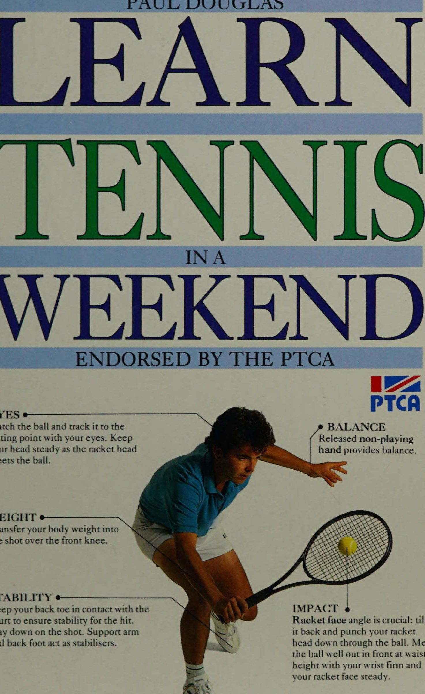
Học tập bằng hình ảnh luôn quan trọng — giờ đây nó đóng vai trò quan trọng trong mọi hoạt động thể thao và quần vợt cũng không ngoại lệ. Học Quần vợt trong một ngày cuối tuần cung cấp những hình ảnh chất lượng cao với những hướng dẫn chi tiết để bạn có thể học không chỉ thông qua luyện tập thể chất trên sân mà còn bằng cách tạo ra những hình ảnh trong đầu về việc bạn thành thạo các kỹ năng và chơi những cú đánh hoàn hảo. Nhìn thấy bản thân trong hành động liên tục sẽ đẩy nhanh quá trình học tập, vì vậy hãy đặt bản thân vào các trình tự di chuyển mà tôi đã đưa vào để hỗ trợ cho việc xây dựng kỹ năng đánh gậy theo từng bước. Học quần vợt trong một ngày cuối tuần là một cuộc phiêu lưu và thử thách. Tôi biết rằng bạn sẽ thích cuộc phiêu lưu và tôi sẽ cùng bạn tham gia thử thách. Với sự giúp đỡ của cuốn sách này, bạn sẽ thành công. Để Kết thúc cú đánh phần giới thiệu của tôi, tôi chúc bạn may mắn.
Paut DouG.Las
2. Chuẩn Bị Trước Kỳ Nghỉ: Trang Thiết Bị, Sân Bãi & Rèn Luyện Thể Lực (Preparation: Tennis Kit, Court, Physical Training & Stretching)
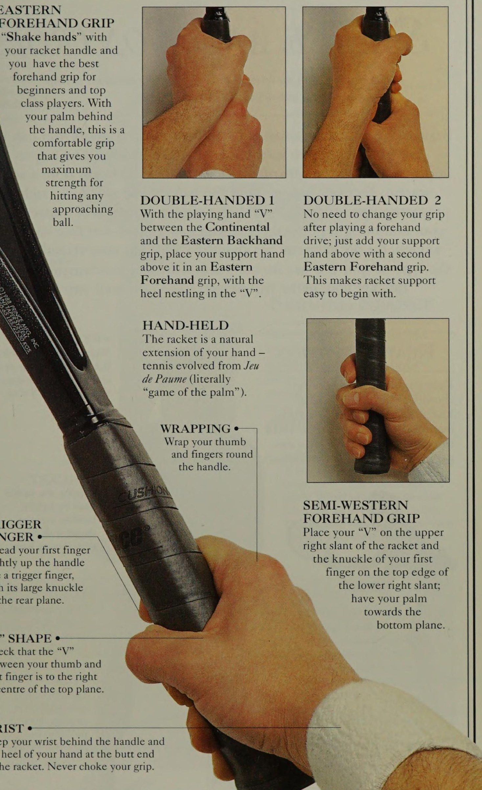
CHUẨN BỊ CHO CUỐI TUẦN Đạt được lợi ích tối đa từ ngày cuối tuần của bạn bằng cách CHỌN MỘT CUỐI TUẦN bạn có thể cống hiến cho môn quần vợt của mình mà không sợ bị gián đoạn và sắp xếp để có một sân tennis theo ý của bạn trước. Lý tưởng nhất là hãy lên kế hoạch dành thời gian cuối tuần của bạn với một đối tác BÓNG luyện tập có khả năng tương tự, người có chung niềm đam mê với bạn. Mua một hỗn hợp nếu bạn sẽ ae cualinadd hoặc trò chơi. Nếu bạn đang tự học, bạn sẽ cần một bức tường luyện tập hoặc một số loại Máy bắn bóng Buel để hoạt động như một đối tác trên sân của bạn.
PHÙ HỢP đúng cách. Bạn có thể cần hai cây vợt. Hãy bắt đầu tập luyện trước khi chuẩn bị trước cuối tuần và thuê một cây vợt từ công viên hoặc trường học địa phương của bạn.
Điều quan trọng là bạn phải trang bị cho mình vì bạn sẽ không muốn phải chờ nghỉ giữa chừng (trang 16-19). khóa học. Nhận hai hoặc ba lon bóng chất lượng hàng đầu để luyện tập đấu gậy và 60 đến 130 quả bóng cấp hai để nạp vào Máy bắn bóng của bạn cho các bài tập đấu gậy. Đối với giày dép, hãy xác định mục đíchDÀYÀOĐộ bám bề mặt và sự thoải mái là điều tối quan trọng (tr.13).
GRIPS Các cách cầm khác nhau cho các cú đánh khác nhau (trang 20-21).
SPIN TMA sử dụng các vòng quay khác nhau để chơi đấu gậy, được làm giày quần vợt và mua một vài đôi tất để bạn có thể thay một đôi mới vào mỗi buổi chiều. Cũng như quần áo chơi tennis, bạn sẽ thấy rằng một chiếc khăn tay, một cặp dây đeo cổ tay và một chiếc băng đô cũng rất hữu ích. Trừ khi bạn đã rất khỏe mạnh, bạn sẽ thấy ngày cuối tuần đòi hỏi thể chất nhiều, vì vậy hãy bắt đầu một chương trình tập luyện thường xuyên trước vài tuần.
Hãy làm quen với cách cầm vợt, các vị trí cơ bản và các nguyên tắc cơ bản khác trước cuối tuần để bạn chuẩn bị sẵn sàng cho ngày đầu tiên.
Những từ in đậm được giải thích thêm trong PICK UP TUBE Tiết kiệm thời gian khi luyện tập trên sân (tr.15).
TÒA và những cú đánh chính xác để chơi (trang 14-15).
TÚI VỢT Bảo vệ vợt của bạn bằng túi giữ nhiệt loại tốt (trang 12—-13).
BỘ TENNIS Chọn vợt, dây, bóng, giày và quần áo CHO CUỐI TUẦN CỦA BẠN, bạn sẽ cần một cây vợt tươm tất, phù hợp với nhu cầu và khả năng của bạn, cũng như quần áo thoải mái, bao gồm cả bộ đồ thể thao nếu bạn có. Có rất nhiều hình dạng và kích cỡ khác nhau của vợt. Hầu hết trong số này là các biến thể của loại “thân rộng” có cấu hình mỏng, đây là bước tiến lớn trong thiết kế vợt tennis kể từ khi vợt gỗ đã lỗi thời. Thân rộng hiện được chấp nhận là gọng kính nhẹ nhất và chắc chắn nhất trên thế giới. “cảm giác” hơn. Quấn chặt phần báng cầm theo đường chéo lên tay cầm từ đầu mông. Cố định nó bằng TAY TAY chồng lên lớp bọc đầu tiên và Khi trục đi vào tay cầm 2 NẮP HỌNG TRÊN Cổ họng là Một chiếc cốc nhựa ôm gọn lấy trục ở đầu tay cầm.
VỢT THÂN RỘNG ‘Kích thước đầu được sắp xếp hợp lý và cạnh bên rộng của vợt thân rộng có nghĩa là khả năng cơ động và độ cứng tốt hơn. Những mẫu thân rộng mạnh mẽ hơn những mẫu có thân hình mảnh mai hơn và chúng có thể dễ dàng cân bằng hơn để nhẹ nhàng hơn trong đầu. nó có thể được bao phủ bởi một tấm pallet cao su xốp hình bát giác. Khung được cân bằng chì đưa vào pallet trong quá trình sản xuất. 2 VAI Liên kết giữa đầu khung, cầu và trục.
TRỤC Trục phân tán rung động trước khi sóng xung kích do va chạm được truyền đến người chơi thông qua tay cầm.
OVERGRIPS Có thể lắp các thanh kẹp quá mức để dán nó xuống ở phần cuối.
MỤC CUỐI Phần cuối của mông thường được che bằng một chiếc mũ để hỗ trợ cho gót bàn tay chơi của bạn.
BUMPER GUARD *+—— DÂY Bảo vệ phần đỉnh của khung và dây. qua các lỗ trên khung vợt BRIDGE. Chuỗi ‘Cầu hoàn thiện các mẫu đầu là lỗ mở _ giữa trục chia. Nó phải dày đặc, tức là lớn hoặc mạnh để đối phó với sức căng của các ô vuông nhỏ. có ít nhất 6 dây vợt chính.
Dây có kích thước từ dày 15 gauge đến 17 gauge. Có hai loại dây tổng hợp cơ bản — dây đơn và dây đa sợi, nhìn chung là loại dây tốt hơn.
• Dây chính Các dây chéo MẪU DẢI GROMMET Những dây này quấn quanh Bề mặt đánh bóng bên ngoài đầu vợt. phải bằng phẳng. 'Các dây là những dây được bảo vệ được dệt bằng các vòng đệm, vừa khít với một mẫu đồng nhất xuyên qua các lỗ dây. và được xâu một QUẦN ÁO BAN ĐẦU Buộc tóc dài ra phía sau hoặc dùng băng đô để mồ hôi chảy vào mắt.
Mặc quần áo thoải mái có khăn thấm hút ở cổ tay để lau trán và giữ cho lòng bàn tay khô ráo.
Những chiếc tất tốt có lớp đệm để bảo vệ 4 quả bóng của bàn chân, gót chân và các gân achille.
OD tôi dễ giặt. Quần short và váy không nên quá chật quanh cạp quần và áo sơ mi phải cho phép cánh tay và vai của bạn tự do di chuyển. Mang tất có đệm ở đế và gót chân.
Túi đựng vợt ¢ ‘Túi đựng vợt nhiệt bảo vệ tối đa 4 vợt và dây đeo vai giúp việc mang theo dễ dàng. = 1BÓNG LENNIS —= THỜI GIAN THỬ NGHIỆM Những quả bóng tennis được chấp nhận chính thức phải trải qua các quy trình kiểm tra nghiêm ngặt trước khi chúng có thể được sử dụng trong giải đấu. Luôn chọn từ những thương hiệu hàng đầu được bán trong hộp chịu áp lực vì sẽ không tốt cho trò chơi của bạn khi chơi với những quả bóng tennis kém chất lượng.
BỐN TRỞ LÊN Một lon 4 quả bóng là đủ để chơi một trận đấu tập nhưng nếu bạn đang tập luyện bằng máy bóng hoặc tập thể dục với đối tác của mình, bạn sẽ cần một cái phễu chứa đầy bóng tennis ít nhất là loại hai.
NGƯỜI VẬN CHUYỂN THIẾT BỊ Túi chuyên dụng lớn hoặc túi đựng giải đấu sẽ đựng mọi vật dụng của thiết bị quần vợt.
BÓNG TENNIS ¢ Một hộp gồm 4 quả bóng thi đấu để thi đấu hoặc tập luyện nghiêm túc.
TẤT TENNIS e để giữ cố định tóc và ngăn QUẦN ÁO TENNIS Quần áo được làm bằng vải nhẹ, có thể giặt được.
TRACKSUITS Trang phục khởi động giúp bạn sẵn sàng hành động — hãy mặc chúng để thực hiện thói quen giãn cơ trước trận đấu. ma LOULWEARS-—— GIÀY Hãy bảo vệ đôi chân và cải thiện động tác của bạn bằng cách chọn giày tennis tốt.
Chúng phải mang lại sự linh hoạt và ổn định, đồng thời hỗ trợ cho mu bàn chân, mắt cá chân và gân achilles của bạn. Nếu bạn chỉ đủ tiền mua một đôi giày thì giày tập chéo là một ý tưởng hay vì chúng có thể được sử dụng cho hầu hết mọi hoạt động thể thao.
Mũ giày bằng da với dây buộc có chiều rộng thay đổi và dây đai ổn định Phần đệm phía sau, cổ giày và lưỡi gà Miếng lót có thể tháo rời với hỗ trợ vòm Bộ đệm khí có thanh uốn ở bàn chân trước Khung chân bằng polyurethane Đế ngoài bằng cao su rắn ĐẾ Hãy chọn giày phù hợp với trò chơi của bạn và loại sân bạn chơi thường xuyên nhất vì các bề Mặt sân khác nhau yêu cầu các loại đế khác nhau: đế nhẵn khi chơi trong nhà, có gai khi chơi trên cỏ và xương cá để sử dụng thông thường.
Những tính năng này được kết hợp trong đế này.
TRÊN GOURT Biết sân của bạn — vạch kẻ, bề mặt, 'SÂN TENNIS CHỮ NHẬT mà chúng ta biết ngày nay đã được giới thiệu cho Giải vô địch Wimbledon đầu tiên vào năm 1877, khi kích thước hiện tại là 23,77 x 8,23m (78 x 27ft) dành cho sân đơn đã được thống nhất (xem trang 86 để biết số đo Người chơi toàn sân). ‘Quần vợt ban đầu được chơi trên Sân cỏ nhưng hiện nay nó được chơi trên nhiều loại Mặt sân khác nhau, phần lớn là Mặt sân tổng hợp. Các bề mặt khác nhau tạo ra các điều kiện chơi khác nhau, điều này có thể ảnh hưởng rõ rệt đến trò chơi của bạn.
ĐÁNH DẤU SÂN SPIN Bộ chuyển đổi vòng quay có thể được trang bị để áp dụng 'Các đường quần vợt là các đường ranh giới và SPU te Ber Bộ dao động bên trong được đặt tên theo chức năng Radic crearesaneeen của chúng. Ví dụ: 3 soir, kiểu đường cuối sân (baseline) và đường biên của các cú đánh giới hạn chiều dài cũng như Độ sâu của bóng và chiều rộng của các cú đánh và cú vô lê của bạn, hạn chế Độ sâu của bóng cú giao bóng của bạn.
Dpgres Net Leftservice Sân giao bóng phải Sân giao bóng Đường giữa Đường đơn Đường biên đôi Đường biên đôi SÂN BỀ MẶT CỎ XI MĂNG Cỏ là Mặt sân chơi nhanh nhưng chơi nhanh hay chậm tùy thuộc vào kết cấu khó bảo trì. Cỏ nhân tạo thật dễ dàng tôi của bề mặt trên cùng. Khi nó còn thô thì phải duy trì và có thể nhanh hoặc chậm. trò chơi sẽ chậm hơn rõ rệt.
CLAY ASPHALT Chơi chậm. Bề mặt trên cùng của nó là lớp nền bitum mịn hoặc thô cần ít bảo trì. cát đòi hỏi phải bảo trì thường xuyên.
Chơi nhanh hơn khi được phun sơn màu xanh lá cây. lưới và các thiết bị bổ sung trong khi các đường giao bóng Khu vực đường xe điện VẤN ĐỀ NET GIẢI QUYẾT kiểu đánh bạn chơi. Nó cung cấp cho bạn Không chỉ là một rào cản được giăng ngang qua với một vấn đề cho mỗi cú đánh và bạn có sân, lưới sẽ quyết định cách đánh của bạn và tìm ra giải pháp tốt nhất.
Trụ cao 1,07m (3ft 6in) và Trung tâm0,91m Gậy đơn 0,91m (3ft) 0,91m (3ft) bên ngoài đường biên đôi (3ft) bên ngoài đường biên đơn bên ngoài ĐÓN ỐNG BÓNG MÁY Dụng cụ lấy/phân phối như thế này giữ 18 quả bóng Ss và giúp việc luyện tập Thiết bị bắn bóng hiện đại rất dễ chơi. Pháo sáng có hiệu quả cao. Ngay cả những máy cơ bản cũng có đầu nhặt bóng và có thể lắp các phụ kiện để treo ống với tốc độ và Độ sâu của bóng khác nhau, làm cho quả bóng bay trên hàng rào sân. quay và mô phỏng một cuộc tập hợp trận đấu hoàn chỉnh.
MÁY BÓNG KHÍ NÉN Được trang bị động cơ đẩy bằng khí nén, một chiếc máy bóng như chiếc này có thể chứa 135 quả bóng và sẽ bắn chúng 3 giây một lần với tốc độ lên tới 33m (ll0ft) mỗi giây. Nó có kích thước 96,5cm (38in) x 56cm hoặc 12 giây 8 khoảng thời gian Pep.
SET Pw ee! (22in)x 33cm (13in).
TỶ LỆ BÓNG Lựa chọn bài tập 3, 6, Có trọng lượng lên tới 14,5kg (32]b), máy đánh Bóng ngon ăn (sitter) dàng cơ động trên sân.
TẬP LUYỆN TENNIS Tập luyện cơ bắp và tay chân của bạn để có thể lực tổng thể nhằm tăng cường sức mạnh, sức chịu đựng, tốc độ và sự linh hoạt trên sân SỨC MẠNH, SỨC KHỎE, TỐC ĐỘ VÀ LINH HOẠT là bốn yếu tố thể lực chính cho quần vợt và mỗi yếu tố đều yêu cầu một thói quen tập luyện. 1. Để có sức mạnh và thể lực nói chung, hãy bắt đầu với các bài tập sức đề kháng cơ thể Super Six được trình bày ở đây. ‘Chúng rất dễ thực hiện nên việc lắp chúng vào các mạch điện thông thường sẽ không khó. 2. Để có sức chịu đựng, hãy chạy vài lần một tuần. Nó rất tốt cho tim và phổi của bạn. ‘Có một số người thực hiện những cú chạy nước rút ngắn, sắc bén trên sân từ đường biên này sang đường biên khác và bạn sẽ sớm chạy hết mọi quả bóng khi tập trung. 4. Để linh hoạt hãy thực hiện thói quen giãn cơ hàng ngày.
SIT-UPS Ngồi nghiêng lưng và đặt lòng bàn tay trước ngực, đầu gối gập lại. Ngồi về phía trước, đầu chạm vào đầu gối. Trở lại và lặp lại.
NÂNG CHÂN Nằm thẳng, khóa đầu gối và nâng chân lên khoảng 45°.
Từ từ hạ chân xuống; lặp lại 'Cố gắng không chạm chân vào sàn.
STEP-UPS Bước lên bằng chân trái trên TM trên một chiếc ghế cao khoảng 50cm (20in), sau đó lại bước xuống bằng chân đó. Thực hiện số lần bước bằng chân phải của bạn. Giữ lưng thẳng và nhìn về phía trước.
MẠCH Thực hiện mỗi bài tập nhiều lần nhất có thể, nghỉ 45 giây giữa các bài tập. Một nửa số tiền tối đa bạn có thể làm sẽ là con số phù hợp cho tháng đầu tiên. Hãy thực hiện toàn bộ thói quen của bạn hai lần mà không nghỉ ngơi. Lưu ý bạn mất bao lâu để có thể đo lường sự tiến bộ của mình. Đặt chương trình mới vào tháng tiếp theo bằng cách hoàn thành lại mức tối đa và sau đó giảm một nửa chúng như trước.
NHẢY ĐÔI ĐẦU GỐI Đứng khép hai chân lại.
Cúi xuống rồi nhảy lên không trung, đưa đầu gối lên ngang ngực. Lặp đi lặp lại không ngừng.
SQUAT THRUST Hỗ trợ trọng lượng của bạn bằng đầu gối giữa hai cánh tay. Đẩy về phía sau, duỗi thẳng cơ thể và chân rồi lại tiến về phía trước. -¢ TRANG BỊ HOÀN TOÀN Thực hiện động tác chống đẩy là một liệu pháp điều trị tuyệt vời cho cánh tay và vai của bạn. Không cần phải khóa cánh tay hoàn toàn hoặc hạ quá thấp. —* Uốn cong ngón tay Nếu bạn cảm thấy thực sự khỏe mạnh, hãy thử thực hiện động tác này trên đầu ngón tay. quần vợt. Dành từ 10 đến 20 giây cho mỗi bài tập kéo giãn, thư giãn và tận hưởng sự kéo giãn. Thực hiện lại thói quen của bạn lần thứ hai, giữ lâu hơn một chút và tăng dần. Dành 15 phút để giãn cơ.
DÀI 1 TURN CƠ THỂ Ngồi với chân trái duỗi thẳng và tay phải đặt phía sau.
Cong đầu gối phải và Bước chân bắt chéo bàn chân phải qua chân trái, đặt nó cạnh đầu gối trái. Cong khuỷu tay trái của bạn và đặt nó vào bên ngoài chân phải phía trên đầu gối của bạn. Xoay phần thân trên của bạn và nhìn qua vai phải, chống lại cú xoay bằng áp lực khuỷu tay trái. 2 CĂNG BỤNG Nằm sấp, tay và chân duỗi thẳng.
Trượt thẳng đứng trên lòng bàn tay của bạn. 4 DÀI CHÂN GIỮA VÀ DƯỚI (Gân kheo|/bắp chân/ achilles) Đứng cách tường khoảng 30cm (1ft) và nghiêng người về phía trước, tựa đầu lên hai cánh tay Bước chân bắt chéo. Cong đầu gối phải và duỗi chân trái về phía sau, giữ gót chân trái trên mặt đất. Di chuyển hông của bạn về phía trước.
TRÌNH TỰ ‘Hãy thử giãn cơ theo thứ tự sau: 7, 6, 4, 5, 1, 2, 3, 8. Nhớ thở bình thường. Đừng nín thở.
Dd 3 CĂNG CÁNH TAY/CỔ TAY Hỗ trợ cân nặng của bạn như hình. 'Xoay tay sao cho ngón cái ở bên ngoài và các ngón tay hướng về phía đầu gối. 5 DÀI CHÂN TRÊN (Hông/gân kheo/háng) Bước một bước lớn về phía trước bằng chân trái, uốn cong đầu gối và giữ thẳng phía trên mắt cá chân. Giữ chân phải duỗi thẳng về phía sau, gót chân khỏi sàn. Hạ hông xuống, tạo áp lực để chuyển động về phía trước của trọng lượng cơ thể. cơ thể của bạn. Chạy bộ quanh 4 sân tennis 5 lần và HỖ TRỢ «- 4 2 vòng cuối cùng của bạn thêm ge Giữ đầu gối phải của bạn nhảy sang một bên và chạy thẳng để hỗ trợ bạn về phía sau. trọng lượng cơ thể khi bạn 8 HIP BIRCLING uốn cong đầu gối trái của bạn — Đứng dang hai chân ra và ngược lại. hai tay chống hông, đầu gối hơi cong. Đẩy hông về phía trước và xoay. Xoay tròn trong 6 DẠNG ĐẦU GỐI (Chân trên phía trước/cơ tứ đầu) Đứng và đặt 1 người kéo gót chân kia.
TƯ THẾ HOÀN HẢO ———— Chân thẳng. Hông về phía trước. Cong đầu gối và gót chân kéo về phía mông. 7 CHUỘT CÁNH TAY Xoay hai cánh tay của bạn vào nhau theo vòng tròn chậm và đầy đủ.
Lặp lại theo hướng ngược lại.
Bây giờ hãy siết chặt nắm tay của bạn và lặp lại 5 vòng tròn mỗi chiều. cả hai hướng.
3. Tối Thứ Sáu: Làm Quen Vợt, Cảm Giác Bóng & Các Kiểu Cầm Vợt (Friday Evening: Grips, Stance, Timing, Spin & Ball Sense)
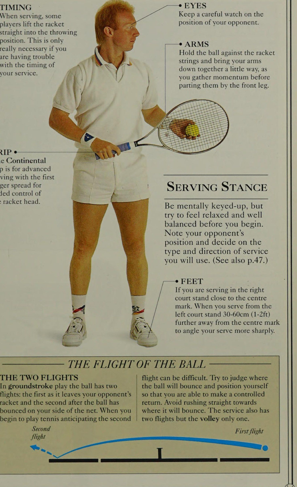
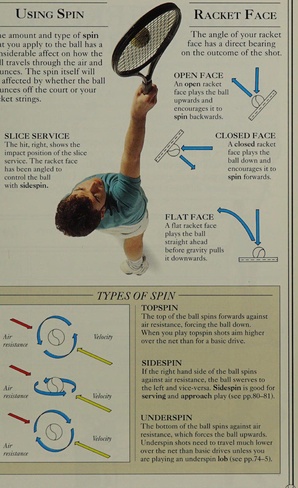
NHẬN CÚM Cách bạn cầm vợt quyết định cách bạn chơi trò chơi CẢM GIÁC BẠN CÓ về bóng khi nó chạm vào dây vợt được truyền đến bạn thông qua cách cầm vợt của bạn. 'Những tay cầm thực sự - giống như phong cách chơi mà họ khuyến khích - là phương Đông, phương Tây hoặc lục địa. Dưới đây là bảy cách cầm vợt cơ bản cho cả người mới bắt đầu và người chơi giỏi hơn để lựa chọn. Nếu bạn mới bắt đầu, hãy thử kiểu cầm vợt kiểu Eastern cho cú đánh chạm đất và những buổi tập đầu tiên của bạn về cú vô lê, và kiểu cầm vợt kiểu Eastern cho những lần thử giao bóng đầu tiên của bạn. Cuối cùng, bạn nên chuyển sang kiểu cầm vợt Continental cho tất cả các pha giao bóng và cú volley. Tay cầm Modified Continental, còn được gọi là “Chopper” vì bạn cầm nó như một cái rìu hoặc một cái rìu nhỏ, cũng rất lý tưởng để giao bóng xoáy.
TÌM HIỂU ĐẾN KIẾM PHỤC VỤ SIÊU CÁNH TAY TỐT NHẤT Khi bạn có thể giao hầu hết các quả bóng qua lưới và đưa 50% trong số đó vào lưới, bạn đã sẵn sàng xử lý Modified Continental — kiểu cầm vợt tốt nhất để giao bóng toàn diện. Nó cũng mang lại nhiều tự do hơn cho hoạt động của cổ tay.
CONTINENTAL GRIP Đặt chữ “V” giữa ngón cái và ngón trỏ của bạn ở bên trái của tâm trên mặt phẳng trên cùng, với đốt ngón tay của ngón trỏ ở góc nghiêng phía trên bên phải hoặc cạnh dưới của nó.
BÓNG CHÁY NHANH Ngay khi bạn đã hài lòng với lưới, hãy thử chơi cả cú vô lê thuận tay và trái tay với kiểu cầm Modified Continental. Không có thời gian để thay đổi cách cầm vợt của bạn trên lưới, việc bám vào một cách cầm vợt là điều hợp lý.
NẮM TAY THUẬN TIỆN ĐÔNG ĐÃ SỬA ĐỔI Đặt chữ “V” giữa ngón cái và ngón trỏ của bạn ở giữa mặt phẳng trên cùng.
Quấn ngón tay cái của bạn một cách tự nhiên quanh tay cầm.
Cách cầm vợt thuận tay ĐÔNG “Hãy bắt tay” với cán vợt của bạn và bạn sẽ có cách cầm vợt thuận tay tốt nhất cho người mới bắt đầu và những người chơi đẳng cấp nhất. Với lòng bàn tay của bạn ở phía sau tay cầm, đây là cách cầm thoải mái mang lại cho bạn sức mạnh tối đa để đánh bất kỳ quả bóng nào đang đến gần.
TAY CẦM TAY Vợt là một cây vợt tự nhiên của de Paume (nghĩa đen là “trò chơi của lòng bàn tay”).
BAO GỒM *—_> Quấn ngón tay cái và các ngón tay của bạn quanh tay cầm.
NGÓN KÍCH HOẠT Xòe ngón tay đầu tiên của bạn lên trên tay cầm giống như ngón tay cò súng, với đốt ngón tay lớn ở mặt sau. HÌNH DÁNG “V” ¢ Kiểm tra xem chữ “V” giữa ngón cái và ngón trỏ của bạn có ở bên phải tâm của mặt phẳng trên cùng không.
CỔ TAY ¢ Giữ cổ tay của bạn phía sau cán vợt và gót bàn tay của bạn ở đầu mông vợt. Không bao giờ bóp nghẹt tay cầm của bạn.
NHÂN ĐÔI 2 Không cần phải thay đổi cách cầm vợt của bạn sau khi thực hiện cú công bóng thuận tay; chỉ cần thêm bàn tay hỗ trợ của bạn lên trên bằng cách cầm vợt Eastern Forehand thứ hai. ‘Điều này làm cho việc hỗ trợ vợt trở nên dễ dàng khi bắt đầu.
CÁNH TAY THUẬN TIỆN BÁN TÂY Đặt chữ “V” của bạn ở góc nghiêng phía trên bên phải của vợt và đốt ngón tay đầu tiên của bạn ở cạnh trên của góc nghiêng phía dưới bên phải; hướng lòng bàn tay của bạn về phía mặt phẳng phía dưới.
TẰM VÀ GONTROL Nắm vững các thế đứng cơ bản và các vị trí đánh bóng để giúp các thế đứng cơ bản, các tư thế đánh và các kiểu xoay khác nhau mà bạn có thể sử dụng là nền tảng để học cách chơi quần vợt. Chìa khóa để cải thiện kỹ thuật đánh gậy của bạn là bắt đầu từ một thế đứng vững chắc. Phán đoán chính xác về đường bay của bóng cộng với việc chuẩn bị vợt và động tác bằng chân sớm sẽ đưa bạn đến Điểm tiếp xúc bóng, với trọng lượng cơ thể cân bằng hoàn hảo và Mặt vợt của bạn được tạo góc chính xác cho cú đánh bạn sắp đánh. Lựa chọn cú đánh của bạn và kiểu xoáy bạn sử dụng để kiểm soát bóng cũng là những yếu tố cơ bản quyết định tốc độ trận đấu của bạn sẽ tiến triển và bạn chơi tốt như thế nào. để mắt đến bất kỳ cú đánh Sm nào sắp tới từ đối thủ FEET Sy của bạn. Giữ bàn chân của bạn bằng khuỷu tay cách xa nhau để có tư thế SẴN SÀNG Đối mặt với lưới với hai bàn chân rộng bằng vai, đầu gối gập lại và trọng lượng dồn lên đầu bàn chân. Giữ vợt ở giữa để bạn có thể thực hiện bất kỳ cú đánh nào một cách dễ dàng.
XEM BÊN Khi chờ thực hiện cú vô lê, hãy cúi người xuống để có thể tự do di chuyển.
MẮT Quan sát người chơi đánh bóng để thu thập manh mối trực quan về bản chất cú đánh của đối thủ.
VỢT Hỗ trợ đầu vợt bằng cách giữ nhẹ nó ở cổ vợt bằng tay không chơi.
GRIP Giữ cán vợt bằng cách cầm thuận tay (xem trang 20). sự ổn định. Đầu gối uốn cong để hạ thấp trọng tâm.
THỜI GIAN BÓNG BAY Khi giao bóng, một số người chơi nhấc vợt thẳng vào vị trí ném. Điều này chỉ thực sự cần thiết nếu bạn gặp rắc rối với thời gian thực hiện 4 cú giao bóng của mình.
GRIP ¢ Tay cầm Continental dành cho người giao bóng nâng cao với ngón tay đầu tiên xòe ra để tăng khả năng kiểm soát đầu vợt.
HAI BAY Trong trò chơi đánh bóng, bóng có hai đường bay: đường bay đầu tiên khi nó rời khỏi vợt đối phương và đường bay thứ hai sau khi bóng đã nảy về phía lưới của bạn. Khi bạn bắt đầu chơi quần vợt với dự đoán về chuyến bay thứ hai MẮT Hãy quan sát cẩn thận vị trí của đối thủ. --e TAY Giữ bóng dựa vào dây vợt và đưa hai cánh tay của bạn xuống gần nhau một chút, đồng thời Vung vợt ra sau (lấy đà) trước khi tách chúng ra bằng chân trước.
TƯ THẾ PHỤC VỤ Hãy chuẩn bị tinh thần nhưng hãy cố gắng cảm thấy thư giãn và cân bằng trước khi bắt đầu.
Lưu ý vị trí của đối thủ và quyết định loại cũng như hướng giao bóng mà bạn sẽ sử dụng. (Xem thêm trang 47.) BÀN CHÂN Nếu bạn giao bóng ở phần sân bên phải, hãy đứng gần điểm giữa. Khi bạn giao bóng từ phần sân bên trái, hãy đứng cách xa tâm điểm 30-60cm (1-2ft) để có góc giao bóng sắc nét hơn.
Chuyến bay đầu tiên CÁC CÚ ĐÁNH KHÁC NHAU TIẾP CẬN Cú đánh là hành động đánh bóng, trong khi Cú đánh tiếp cận (approach shot) là một cú đánh mô tả đường bay và cuối cùng là bất kỳ cú đánh nào được thực hiện trước điểm đến của bóng sau khi va chạm. Nhiều cú đánh từ đường lên sân đến quần vợt có thể được thực hiện từ các cú vô lê khác nhau. Bạn có thể thực hiện các cú đánh, chẳng hạn như cách tiếp cận cú Cú trái tay (backhand) bằng cách tiếp cận cú đánh Đánh chéo sân (cross-court) (xem trang 80-81). Dưới đây là một số cú đánh trực tiếp hoặc sử dụng trong các tình huống trong trò chơi. ở dưới trung tâm.
CROSS COURT AND gee DROP SÚT XUỐNG DƯỚI DÒNG Một cú đánh được thực hiện để chạm đất Các cú đánh Đánh chéo sân (cross-court) chỉ qua lưới được thực hiện theo đường chéo, tức là có rất ít sân từ bên phải đến điểm nảy bên phải được gọi là sân.
Một cú bỏ nhỏ từ đường xuống và cú đánh được đánh song song thường được thực hiện ở bên lề. với xoáy xuống.
CHUYỂN SÚT CHIP SÚT Một cú đánh chuyền là Một cú đánh chip là một cú đánh ngắn khi bóng được đánh vào cú đánh bị chặn được thực hiện qua đường tiến của bạn với xoáy xuống và đối thủ và có thể nhằm mục đích tiếp đất ở vị trí bị đánh Đánh chéo sân (cross-court) hoặc đường biên ngang của đối thủ. bàn chân hoặc góc cạnh THE HIT ARM Cánh tay trái mở rộng để giữ Trọng tâm cơ thể. 'Cố gắng giữ Trọng tâm cơ thể hoàn hảo, hạ trọng lượng xuống khi bạn tiến về phía trước để thực hiện cú đánh. Trong ví dụ này, người chơi giữ cổ tay chắc chắn và đầu vợt cao hơn cổ tay khi thực hiện cú vô lê thấp. rộng của anh ấy.
Hai chân dang rộng và bước vào cú đánh để tạo ra trọng tâm thấp nhằm tăng thêm độ ổn định cho cú đánh.
SỬ DỤNG SPIN Wn WA Số lượng và kiểu xoáy WON) bo SY) MA mà bạn áp dụng cho quả bóng có ảnh hưởng đáng kể đến cách quả bóng SRR, SS LN) di chuyển trong không khí và nảy lên. Bản thân độ xoáy sẽ bị ảnh hưởng bởi việc bóng bật ra khỏi sân hay dây vợt của bạn.
DỊCH VỤ SLICE Cú đánh, bên phải, hiển thị vị trí tác động của giao bóng lát cắt. Mặt vợt được thiết kế góc cạnh để kiểm soát bóng bằng Xoáy ngang.
SZ Air GC) Vận tốc kháng ale kháng Vận tốc Không khí a tất cả kháng Mặt vợt WN WYN Wn SY QW Góc của Mặt vợt của bạn có ảnh hưởng trực tiếp đến kết quả của cú đánh.
WA WON) bo SY) MA “WOO SRR, SS LN) MẶT MỞ Một Mặt vợt mở sẽ đánh bóng lên trên và khuyến khích nó quay về phía sau.
MẶT ĐÓNG Mặt vợt đóng sẽ đánh bóng aN xuống và khuyến khích nó xoáy về phía trước.
MẶT PHẲNG Mặt vợt phẳng đánh bóng thẳng về phía trước trước khi trọng lực kéo nó xuống.
SSS SSS KHÓA HỌC CUỐI TUẦN ‘KHOÁ HỌC BAO GỒM MƯỜI HAI kỹ năng, chia thành hai ngày học ứng dụng và thực hành.
Các cú chạm đất cơ bản, giao bóng và Trả giao bóng sẽ được thực hiện vào ngày đầu tiên sau khi bạn đã phát triển cảm giác về bóng và vợt. Ngày thứ hai dành cho các cú vô lê, Cú lốp bóng (lob) và đập bóng, cũng như các kỹ năng tiếp cận, giao bóng và vô lê. Đến cuối ngày đầu tiên, bạn sẽ tính điểm và đến cuối ngày thứ hai, bạn sẽ sẵn sàng cho một trận đấu, một hiệp đấu hoặc thậm chí là một trận đấu tập. Những người khác nhau tiến bộ với tốc độ khác nhau, vì vậy đừng bỏ cuộc chỉ vì bạn NGÀY 1 giờ Trang
KỸ NĂNG 1 Cảm giác bóng cơ bản 1 28-31
KỸ NĂNG 2.
Cú công bóng thuận tay 1-14/2 || 32-32
KỸ NĂNG 3.
Cú Cú trái tay (backhand) 1-14/2 ||. 368-43 Tay đôi 1
KỸ NĂNG 4 Batrnand 142 44-45
KỸ NĂNG 5 Giao bóng 46-55
KỸ NĂNG 6 Giao bóng Trả về 1 56-59 Tìm hiểu khóa học trong nháy mắt là việc không cần bàn cãi.
KỸ NĂNG 7 Cú volley thuận tay 1 60-63
KỸ NĂNG 8 Cú vô lê trái tay 1 66-71
KỸ NĂNG 9 Phòng thủ thùy 1 72-75
KỸ NĂNG 10 Tấn công 1 76-79
KỸ NĂNG 11.
Tiếp cận Chơi 1 80-81
ĐỒNG HỒ
Đồng hồ xuất hiện trên trang đầu tiên của mỗi kỹ năng mới. Chúng làm nổi bật, thông qua phần màu xanh lam, bạn có thể dành bao lâu và cho biết kỹ năng cụ thể nào phù hợp trong ngày của bạn.
Ví dụ: kiểm tra đồng hồ ở trang thứ 32. Đoạn màu xám cho biết bạn đã dành 1 giờ cho kỹ năng f trước đó và hiện tại nên dành 1'/: giờ cho Kỹ năng 2: Thiết lập, như được hiển thị trong phần màu xanh lam.
Trực quan hóa 2 Smash X
KỸ NĂNG 12 Giao bóng & cú volley Ne: luyện tập e—~s theo mức độ khó của nó. Một dấu đầu dòng (¢) biểu thị rằng kỹ năng này tương đối là First © chuyến bay thứ hai Cắt & xoay BÓNG Cơ bản Định nghĩa: Phát triển phản ứng tự nhiên của bạn với một quả bóng đang chuyển động để thực hiện các kỹ năng đơn giản 'Ném BÓNG TENNIS qua lại với một đối tác để kiểm tra phản ứng của bạn và đánh giá cảm giác bóng của bạn. Bắt đầu buổi tập của bạn với các bài tập ném và bắt dễ dàng của riêng bạn, sau đó chơi ném/bắt với một đối tác. Tiến bộ từ các bài tập khá tĩnh đến các bài tập di chuyển. Đặt ra cho nhau những thử thách - chẳng hạn như “đầu tiên phải làm 10 việc liên tiếp” - để truyền cảm hứng cho những nỗ lực lớn hơn và cải thiện Sự tập trung.
MỤC TIÊU: Phát triển và áp dụng cảm giác bóng khi lái xe, giao bóng lên lưới (serve & volley).
Xếp hạng ® đến ¢¢¢¢e® theo khả năng bẩm sinh của bạn.
NẢY VÀ BẮT Ném bóng qua lại với đồng đội và bắt bóng trước khi bóng nảy lên. Bây giờ, hãy tung quả bóng ra khỏi sân ở giữa bạn, bắt lấy nó khi nó rơi về phía (Bằng cách
SKILL SENSE lần nảy thứ hai giữa đầu gối và —\ chiều cao thắt lưng.
PHÁT TRIỂN KHẢ NĂNG Phát triển khả năng của bạn bằng cách ném bóng cho nhau cùng một lúc, như những người chơi đang làm ở đây. Bắt đầu bằng cách ném bóng thẳng về phía nhau, bắt bóng, sau đó thử Tung bóng xuống nhau. Khi điều này trở nên dễ dàng, hãy thử ném thẳng qua trong khi đối tác của bạn ném bóng xuống và thay đổi kiểu sau vài giây bằng cách gọi “chuyển đổi”. ey TAY Lòng bàn tay mở với các ngón tay khép vào nhau.
PHÁT TRIỂN KỸ NĂNG CƠ BẢN Quần vợt ngắn hoặc quần vợt mini là môn lý tưởng để phát triển kỹ năng cảm nhận bóng của bạn và bản thân nó là một trò chơi hay. Trận đấu được thi đấu trên một sân có kích thước bằng cầu lông — 13,4 x 6,1m (44 aes x 20ft) — với chiều cao trung tâm của lưới tennis Sane là 80cm (2 ft 7in).
Vợt ngắn, nhẹ và chủ yếu bằng nhựa, bóng mềm hoặc có độ nén thấp.
ĐÁNH BÓNG Dùng lòng bàn tay để đánh bóng.
PALM TO PALM Khi bạn thu bàn tay cầm vợt về phía sau với lòng bàn tay mở và các ngón tay khép lại, hãy thả quả bóng sang một bên và phía trước bạn. Xoay cánh tay của bạn về phía trước ra khỏi cơ thể bằng động tác nâng và đánh bóng bằng lòng bàn tay về phía đối tác ở một khoảng cách xa.
SS ee288& SSS eeeRe.
See ee eee eReee GG RR RRERREB BL SSSR eee eee eeee Sa Se eee eeeeeee a a a Skee See eeeee Se eeeeeeeer Vợt tennis ngắn eb il Aaa aM S Bóng Donge PHỐI HỢP TAY-MẮT Các bài tập cảm giác bóng rất quan trọng để cải thiện khả năng phối hợp tay và mắt. Hãy cố gắng tập thói quen thực hiện những bài tập này bất cứ khi nào bạn có thời gian rảnh. 1 Ném một quả bóng lên không trung và bắt nó khi nó rơi xuống. Bắt bóng bằng cả hai tay và sau đó chỉ bằng tay chơi của bạn. 2 Ném bóng lên bằng tay trái và bắt bóng bằng tay phải và ngược lại.
HÀNH ĐỘNG-PHẢN ỨNG Khi đối tác của bạn quay mặt ra xa bạn, hãy gọi tên anh ấy và sau đó ném một quả bóng tennis về phía anh ấy. Anh ta phải xoay người thật nhanh, phản ứng với quả bóng và bắt nó. Bây giờ đến lượt bạn. Bạn không được quay lại cho đến khi tên của bạn được gọi.
EYE CONTACT Nghe tên bạn, quay nhanh và tìm bóng.
TAY Tìm kiếm bóng bằng cách tiếp xúc bằng cả mắt và tay.
HIPS Cải thiện cảm giác giữ Trọng tâm cơ thể của bạn bằng cách Lên dây cót (tích lực) từ hông thay vì xoay người.
KỸ NĂNG THÊM Khi bài tập hành động-phản ứng cơ bản trở nên dễ dàng, hãy trì hoãn việc gọi điện cho đến khi bóng đã bay tới.
Hãy phát triển nó hơn nữa bằng cách đợi cho đến khi bóng gần chạm đến đối tác của bạn trước khi gọi. 3 Tung bóng ra khỏi sân và bắt bóng khi bóng rơi, đầu tiên bằng cả hai tay, sau đó thử bằng một tay. 4 Tung bóng lên cao hơn khỏi sân và xoay một vòng trước khi bắt bóng.
MỘT PHƯƠNG PHÁP LINH HOẠT ‘Hãy thử chơi các trò chơi khác để cải thiện khả năng cảm nhận bóng của bạn. Bóng rổ là một chất điều hòa tốt và sẽ tăng thêm sự linh hoạt cho các chuyển động của bạn.
Bản sao: bài tập nảy để thành thạo. Giữ cho tay cầm của bạn thật chắc chắn và chỉ cách nhau _—rộng bằng vai Xem Dễ dàng chuyển động hướng lên trên của 4 fo và đầu gối của bạn CAF đặt đầu vợt để hơi uốn cong hoàn toàn.
Kiểm soát bóng. --- ĐU, NÉN VÀ ĐẤM --- STREAMER Gắn các dải giấy hoặc vải vào vợt của bạn để thực hành 3 động tác cơ bản trong quần vợt - vung, ném và đấm. Những người truyền phát cho bạn thấy rằng Tốc độ đầu vợt là cần thiết để ném và vung trong khi cú đấm hầu như không cần đến tốc độ đó. Lắc vợt là Sử dụng cách cầm vợt tự nhiên và giữ vợt ra trước khi đánh bóng bật lên khỏi dây của bạn. được sử dụng trong lối chơi chạm đất trong đó tốc độ phải được tạo ra để trả bóng nhanh chóng. Ném bóng là cú vô lê cần thiết để giao bóng, khi Tốc độ đầu vợt tối đa là cần thiết để truyền tốc độ cho một quả bóng gần như đứng yên và để đập bóng từ trên cao. Trong cú volley, cú đấm được sử dụng để Đổi hướng bóng sức mạnh của quả bóng về mục tiêu mới.
KIỂM SOÁT BÓNG ‘Để bạn quen với việc thay đổi góc của Mặt vợt cũng như tăng sức mạnh cho cổ tay của bạn, hãy thử nảy bóng lên khỏi dây, sau đó lật đầu vợt lại để cú nảy tiếp theo sẽ chạm vào bề mặt còn lại của dây. Tiếp tục lật Mặt vợt giữa BEAM BOUNCE Đánh bóng ra khỏi mép hoặc xà của đầu vợt là khó nhất Giao bóng (ném)
Phần II: Cú Đánh Chạm Đất Cuối Sân & Quả Giao Bóng Khởi Đầu
4. Sáng Thứ Bảy (09:00 - 10:30): Cú Thuận Tay Mượt Mà (Forehand Drive) (Saturday Morning: The Forehand Drive)
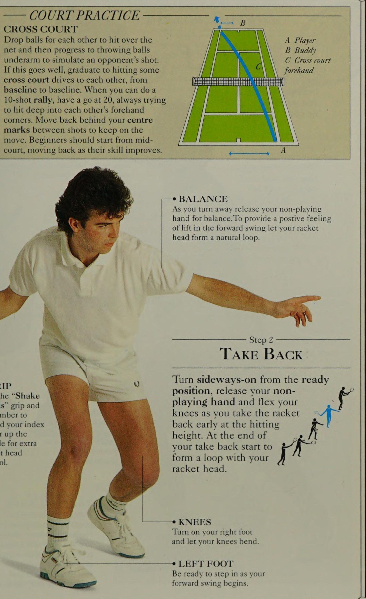
Thuận tay — ĐÁ Định nghĩa: Cú chạm đất tự nhiên nhất có thể được thực hiện từ cả tư thế đóng và bán mở 1 'ĐỘ TAY TRỰC TIẾP là cú đánh chạm đất chính Zia } cho cả người mới bắt đầu và người chơi nâng cao.
Giống như những chiến binh ngày xưa mang kiếm ở 16 tay phải và khiên ở tay trái, những người chơi quần vợt có bản năng thôi thúc tấn công bóng ở phía thuận tay. Nếu bạn cảm thấy sự thôi thúc tự nhiên này, hãy thực hiện nó và phát triển một cách tiếp cận tích cực ngay từ đầu. Hãy nhớ rằng: một tay vợt không có cú công bóng thuận tay tấn công giống như MỤC TIÊU: Một cú đánh tấn công toàn diện quyết định trận đấu từ sân sau và tạo ra các cơ hội đánh bóng trên lưới. Xếp hạng ¢® MỤC TIÊU, THỜI GIAN VÀ KIỂM SOÁT fa 7 i Rectan . Chuyến bay vòng cung đảm bảo tỷ lệ sai sót tốt.
HÌNH THỨC BÓNG ĐÁ Để đánh các cú công bóng thuận tay và trái tay của bạn | Vị trí của bạn nằm nghiêng để đưa bóng sâu đến cuối sân, nhắm vào lưới khác_| chỉ bằng cách Lực đạp chân phải và chiều cao của bạn, hoặc khoảng 1m (3ft), qua lưới. bước vào bằng bên trái của bạn. Luyện tập động tác bằng chân và thực hiện động tác chạm đất của bạn TẠO MỘT VÒNG TAY cùng một lúc.
Thư giãn khuỷu tay của bạn khi Kết thúc cú đánh cú thu bóng và để đầu vợt của bạn tạo thành một vòng lặp tự nhiên để tăng thêm nhịp điệu và tốc độ.
Tay súng KỸ NĂNG không có súng.
VAI MỤC TIÊU Khi chuẩn bị, hãy xoay vai cho đến khi vai không đánh của bạn nhắm vào quả bóng đang tới. Điều này giúp bạn sắp xếp bóng và cải thiện thời gian cũng như khả năng kiểm soát của bạn trong khu vực đánh. — THỰC HÀNH TÒA QUA TÒA THẺ Thả bóng cho nhau đánh qua lưới rồi chuyển sang ném bóng dưới cánh tay để mô phỏng cú đánh của đối phương.
Nếu việc này diễn ra suôn sẻ, hãy chuyển sang đánh một số cú đánh Đánh chéo sân (cross-court) với nhau, từ đường cuối sân (baseline) này đến đường cuối sân (baseline) khác. Khi bạn có thể thực hiện cú đánh tập trung 10 cú đánh, hãy bắt đầu ở mức 20, luôn cố gắng đánh sâu vào các góc thuận tay của nhau. Di chuyển về phía sau điểm trọng tâm chiến thuật (Centrepoint) của bạn giữa các lần bắn để tiếp tục di chuyển. Người mới bắt đầu nên bắt đầu từ giữa sân, lùi lại khi kỹ năng của họ được cải thiện.
GRIP Sử dụng cách cầm "Lắc tay" và nhớ giơ ngón tay lên tay cầm để kiểm soát đầu vợt tốt hơn.
Bip A Player B Buddy C Cú thuận tay Đánh chéo sân (cross-court) Bia
Bước 2 Lùi lại Bước bằng chân trái 5 Ve và vung đầu vợt lên để gặp quả bóng 4 khi nó rơi 3 giữa đầu gối VỢI và thắt lưng Chiều cao A ft CÁNH TAY.
KHOẢNG CÁCH và kiểm soát cú đánh của bạn.
ĐẦU Giữ đầu vững vàng, ĐU ĐU Vững Chắc :
Siết chặt tay cầm HÀNH ĐỘNG ¢ và giữ cổ tay của bạn Xoay vợt nhiều hơn Chơi các cú phát bóng sâu qua sân về phía đối thủ
SKILL OLED 2 THE HIT và để mắt đến quả bóng. đầu từ hông này sang hông khác để đạt được cú đánh hoàn hảo.
CHÂN Giữ hai chân rộng bằng vai để giữ ổn định khi thực hiện cú đánh.
Thực sự mở rộng cánh tay vợt của bạn 2 khi đánh. Nếu bạn đánh với khuỷu tay cong, bạn đang ở quá gần bóng và có thể bị mất lực —* VAI Xoay mạnh vai phải của bạn vào cú đánh. chắc chắn khi va chạm. >—* ĐẦU GỐI Chuyển trọng lượng của bạn về phía trước qua đầu gối trái đang uốn cong của bạn để tạo ra một nền tảng đánh âm thanh. góc thuận tay hoặc dọc đường biên tới góc trái tay của anh ta hoặc thực hiện một cú đánh Đánh chéo sân (cross-court) góc cạnh (một cú đánh nảy gần đường giao bóng và đường biên).
Bước 5 TƯ THẾ «——_— LÀM THEO QUA Giữ đầu của bạn ổn định như vùng đánh.
THEO QUA Chân phải của bạn sẽ Quét vợt lên cao. Hãy để vợt của bạn ổn định và vung vợt Kết thúc cú đánh ở độ cao đầu.
• GIỮ ỔN ĐỊNH Chuyển hoàn toàn trọng lượng cơ thể của bạn khi bạn lấy lại vị trí sẵn sàng một cách tự nhiên.
• CẮM VÀ GIỮ Giữ chắc cổ tay và dang rộng ngón tay đầu tiên để kiểm soát tốt hơn.
BACK BACK Đưa vợt về phía sau ở độ cao đánh bóng và tạo thành một cú giật sâu khi bạn thực hiện cú thu vợt về phía trước. Giữ cho cổ tay của bạn hoạt động tự do hơn so với khi truyền động cơ bản.
KỸ NĂNG 2 LÁI TAY TAY TRONG HÀNH ĐỘNG Công việc tĩnh là cách luyện tập tốt, nhưng khi nói đến thi đấu nói chung, cần phải có một cách tiếp cận năng động hơn.
Trình tự di chuyển này hướng dẫn bạn cách chuẩn bị vợt và định vị chân khi bạn tiếp cận khu vực đánh bóng. Nền tảng đánh rất chắc chắn nhưng chuyển động vẫn diễn ra từ đầu đến cuối, cho phép bạn tiếp tục thực hiện cú đánh tiếp theo hoặc quay trở lại căn cứ trước đó.
Sree UAC KING Eilts VỊ TRÍ Chơi các cú Cú thuận tay (forehand) sâu về phía thuận tay và trái tay của đối thủ BẮT LẠI người đến để ghim anh ta ở phần sân sau.
Hướng các cú đánh của bạn qua sân và đợi anh ta chuyển sang cú đánh bóng dọc, sau đó sẽ là -@ BÓNG ĐÁ 'Xoay sang một bên và bắt đầu bằng một trong hai chân, điều chỉnh động tác chân của bạn khi bạn di chuyển.
Bắt đầu thực hiện cú đánh lùi trước khi đến khu vực đánh bóng, nếu không bạn sẽ phải chuẩn bị và thực hiện cú đánh tất cả trong một.
Xem NOLL D DRIVE ———-— CHIẾN THUẬT Một mưu đồ hữu ích là đánh các cú đánh Đánh chéo sân (cross-court) có góc cạnh, như được hiển thị ở đây. Cú đánh tiếp đất gần đường biên và giữa đường giao bóng và đường cuối sân sẽ đưa đối thủ của bạn ra ngoài để trả bóng, mở ra sân cho cú đánh tiếp theo của bạn.
MOMENTUM Trên các quả bóng rộng, hãy để chân sau của bạn vung qua THEO QUA sau khi tiếp xúc, sử dụng nó để Kết thúc với động tác theo dõi cơ bản của bạn, phóng bạn về phía trước, nhưng nếu bạn không ở vị trí tiếp theo. vùng đất của con người, bạn có thể phải GIẢI GIÓ Định vị âm thanh song song với đường bay của quả bóng sẽ khiến quỹ đạo của bạn thấp hơn và giữ nguyên vị trí để giữ cú đánh của bạn trong sân. chuyển động thư giãn tự nhiên khi bạn bước vào bóng.
KỸ NĂNG NGÀY 1 ĐÁNH TRÁI TRÁI Định nghĩa : Đối tác chạm đất của cú công bóng thuận tay 2 le 'CÚT TRÁI có cách đánh gọn gàng hơn nhiều và 4, : ft lấy lại ít năng lượng tiêu hao hơn so với cú đánh . a K ) thuận tay. Một cú đánh tốt và xoay toàn thân sẽ giúp bạn có thể thực hiện cú đánh giống như một con rắn đuôi chuông đang tấn công. Sử dụng cách cầm vợt trái tay kiểu phương Đông hoàn toàn.
Xếp hạng ¢¢ khi thay đổi cách cầm.
HEAD Giữ đầu khi quay đi.
CÔNG TẮC CẦM xung quanh tay cầm cho đến khi hình chữ “V” FEET giữa ngón cái và Cân bằng về phía trước, bật —_es \i ngón trỏ của bạn thẳng hàng với bàn chân trái, để trọng lượng của bạn di chuyển vào mép trong của vợt. vào nó khi bạn lấy lại vợt.
MỤC TIÊU: Ban đầu là cung cấp khả năng phòng thủ vững chắc. Sau đó phát triển thành vũ khí phản công.
Bước 2 BẮT ĐẦU BƯỚC LẠI Từ vị trí sẵn sàng, đối mặt với lưới từ phía sau đường biên ngang của bạn.
Giữ vợt ở phía trước, đỡ vợt ở cổ vợt 4 bằng tay không cầm vợt của bạn và sẵn sàng thay đổi cách cầm vợt ngay lập tức.
Giữ vợt ổn định và xoay tay cầm vợt của bạn vào trong một cách ổn định khi bạn bắt đầu xoay sang trái trong thời gian đầu trả bóng. cách cầm, thay đổi cách cầm của bạn bằng cảm giác.
GỢI Ý BACKHBAY TIẾP CẬN Lúng túng Nếu bóng đang đến gần bạn, hãy tránh đường bay của nó bằng chân trước. Khi bạn chuyển trọng lượng của mình sang bàn chân này, hãy nghiêng người ra khỏi quả bóng để bạn có thể mở rộng cánh tay vợt của mình hoàn toàn khi đánh. Ở lại với
Bước 3 HOÀN TOÀN LẠI ‘Xoay vai nhiều hơn và chuyển trọng lượng sang chân trái. Giữ tay đỡ của bạn ở cổ vợt khi bạn đưa nó ra sau hông trái.
HIP Xoay toàn bộ cơ thể của bạn xung quanh và cố gắng để hông của bạn song song với đường bay của quả bóng, khi bạn đưa vợt về phía sau ở độ cao đánh bóng. ‘< SẴN SÀNG ĐÁNH ĐÁNH 7 ey Hoàn thành cú trả bóng với lưng hướng về phía lưới.
Tay thuận của bạn vẫn đỡ vợt và trọng lượng của bạn đã sẵn sàng, sẵn sàng chuyển về phía trước khi cơ thể Ss \CZp của bạn thả lỏng và chân phải của bạn bước vào. bóng theo sau khi bạn trả bóng dọc theo đường bay ban đầu của nó.
Luyện tập để có sức mạnh Nếu bạn cảm thấy khó di chuyển vai đủ xa để dồn sức mạnh thực sự vào cú đánh của mình, hãy thử đứng quay lưng về phía lưới. Yêu cầu đối tác của bạn thả bóng sang một bên và phía sau bạn ở khoảng cách tầm tay vợt. Quan sát quả bóng qua vai khi bạn xoay người và bước vào để thực hiện cú Cú trái tay (backhand). ede XUỐNG Hãy để đầu gối sau của bạn cong khi bạn quay đi và thực sự cúi xuống để thực hiện cú đánh của mình.
5. Sáng Thứ Bảy (10:45 - 12:00): Làm Chủ Cú Trái Tay Một Tay & Hai Tay (Saturday Morning: Backhand Drive & Two-Handed Backhand)
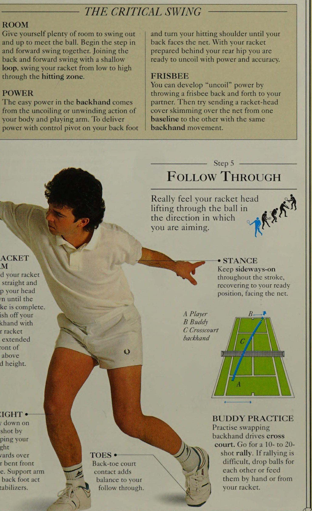
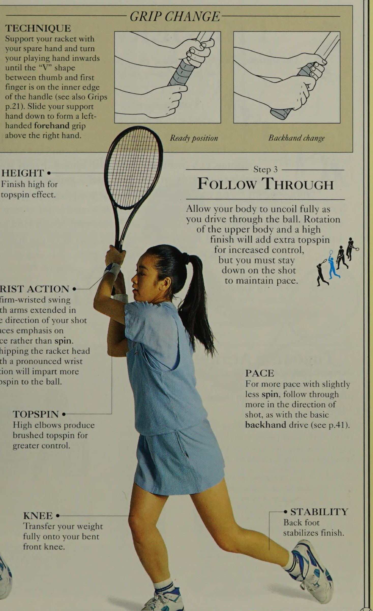
Bước 4 ae VỢT 3 GÓC ĐÁNH Duy trì thả tay đỡ của bạn ra, và eee thực hiện một cú giật nông với độ cao theo đầu vợt để xuyên qua. đảm bảo độ A từ thấp đến cao, ví dụ như xoay người về phía trước khi 2 bạn bước vào.
TẬP TRUNG *———@ Quan sát quả bóng và theo dõi nó đến điểm đánh bằng mắt.
Giữ yên đầu.
ANGLED HIT Giữ thẳng cánh tay vợt của bạn khi tiếp bóng với cổ tay bị khóa. Mặt vợt của bạn nên hơi nghiêng về phía sau để tạo lực nâng.
CHÂN Bước chân trước của bạn song song với đường bay của bóng để đảm bảo bệ đánh chắc chắn.
HÀNH ĐỘNG TAY ¢ Cách cầm vợt trái tay kiểu phương Đông và cổ tay chắc chắn sẽ phát triển một cú công bóng trái tay mạnh mẽ và được kiểm soát tốt. ôi ff
• CÂN BẰNG Sau khi thả tay đỡ của bạn ra khỏi vợt, hãy duỗi tay ra để giữ Trọng tâm cơ thể.
TRỌNG LƯỢNG Chuyển trọng lượng cơ thể của bạn lên đầu gối cong trước của bạn khi bạn quét đầu vợt lên trên để gặp bóng. Giữ ngón chân sau của bạn trên sân.
ĐI TIÊU CHUẨN Hãy tạo cho mình nhiều khoảng trống để vung ra và xoay vai đánh của bạn cho đến khi bạn hướng lên trên để gặp bóng. Bắt đầu bước quay mặt về phía lưới. Với vợt của bạn và vung về phía trước cùng nhau. Tham gia vào động tác đã chuẩn bị sẵn phía sau hông sau, bạn thực hiện động tác xoay người về phía sau và phía trước với động tác nông sẵn sàng để bung ra với sức mạnh và độ chính xác. giật, vung vợt từ thấp lên cao qua vùng đánh.
FRISBEE Bạn có thể phát triển sức mạnh "mở cuộn" bằng cách POWER ném đĩa bay qua lại cho đối tác của bạn. Sức mạnh dễ dàng trong cú Cú trái tay (backhand) đến với đối tác. Sau đó, hãy thử đưa đầu vợt ra khỏi cuộn hoặc thả ra khi lướt qua lưới từ một cơ thể và cánh tay chơi của bạn. Để cung cấp đường cuối sân (baseline) cho người kia với cùng sức mạnh bằng trục điều khiển ở chân sau của bạn tôi chuyển động trái tay.
Kết thúc cú Cú trái tay (backhand) A Player Rt của bạn với B Buddy cây vợt của bạn C Cánh tay Đánh chéo sân (cross-court) mở rộng trái tay THỰC HÀNH TRỌNG LƯỢNG BUDDY Duy trì cú đánh bằng cách Thực hành hoán đổi các cú Cú trái tay (backhand) chéo giữ trọng lượng của bạn trên sân. Hãy thực hiện một màn chơi khó từ 10 đến 20, thả các quả bóng để tiếp xúc thêm nhau hoặc nạp số dư vào vr của bạn bằng tay hoặc từ đó tức là theo dõi. $3) vợt của bạn.
CÁNH TAY VỢT PHÒNG Giữ vợt thẳng cánh tay của bạn và giữ đầu bạn hướng xuống cho đến khi cú đánh hoàn tất. ở phía trước mặt bạn ở độ cao trên đầu.
NGÓN Ngón chân sau hướng về phía trước trên đầu gối cong phía trước của bạn. Cánh tay hỗ trợ và bàn chân sau đóng vai trò là chất ổn định.
Bước 5 LÀM THEO QUA Thực sự cảm thấy đầu vợt của bạn nâng qua quả bóng theo hướng mà bạn đang nhắm tới trong 4 giờ.
TÌNH TRẠNG Giữ tư thế nghiêng trong suốt cú đánh, hồi phục về vị trí sẵn sàng, mặt hướng vào lưới. bắn cuộc biểu tình. Nếu cuộc biểu tình là 3 NĂM NĂM TRÁI LÁI ĐANG HOẠT ĐỘNG
KỸ NĂNG Khả năng kết hợp lượt và chạy với việc chuẩn bị cú đánh và định vị trong khu vực đánh có thể được phát triển thông qua luyện tập thường xuyên. Trình tự này minh họa cách người chơi di chuyển linh hoạt để tiết kiệm thời gian và năng lượng - tạo ra những cú đánh dường như dễ dàng. Với cú công bóng trái tay khi đang di chuyển được thêm vào danh mục động tác chạm đất của bạn, giờ đây bạn sẽ trở thành bậc thầy ở phần sân sau.
OFF THE MARK e————} Đẩy xuống sân theo hướng ngược lại với hướng bạn muốn đi. Điều này sẽ tạo ra một lực phản ứng đưa bạn đi đúng hướng.
HÀNH ĐỘNG KHUỶU TAY ¢ Sau khi xoay bàn chân sau và chuẩn bị vợt áp sát vào cơ thể, hãy để khuỷu tay của bạn di chuyển ra ngoài khi bạn duỗi thẳng cánh tay trong cú vung về phía trước.
THỜI GIAN Việc tính thời gian dựa vào động tác bằng chân và vị trí hoàn hảo. Khi bắt đầu chơi trái tay khi đang di chuyển, hãy đánh bóng khi nó rơi từ đỉnh nảy. Khi bạn trở nên thành thạo hơn, bạn có thể đưa bóng đến gần đỉnh của cú nảy.
BIẾN ĐỔI BÓNG BÓNG ĐÓ Tiếp cận quả bóng theo đường cong để về phía sau và song song với đường bay của nó. Bắt đầu lùi lại sớm, sử dụng bước sang ngang đơn giản để tiếp cận quả bóng Ifa đang lao tới bạn, bước ra khỏi đường bay của nó bằng chân trước.
Khi bạn chuyển trọng lượng cơ thể của mình lên bàn chân này, hãy nghiêng người ra xa quả bóng để bạn có thể mở rộng hoàn toàn cánh tay cầm vợt của mình khi đánh. Sau đó, giữ bóng theo hướng tiếp theo khi bạn trả bóng dọc theo đường bay ban đầu của nó. --e Khu vực đánh BUILD-UP.
BÓNG CAO / Với quả bóng cao, hãy đưa vợt của bạn về phía sau cao hơn so với cú đánh cơ bản, nhưng vẫn giữ vợt ở độ cao khi đánh. Đưa đầu vợt của bạn lên cao để đón bóng bằng toàn bộ Mặt vợt.
Thực hiện theo bằng cách mở rộng hoàn toàn cánh tay vợt của bạn theo hướng đánh của bạn.
BACKHAND Định nghĩa : Đối tác đánh mặt đất tùy chọn của Axe cho cú công bóng thuận tay 1 fis 'BACK HANDED BACKHANDED là một lựa chọn hoàn hảo cho mắt đối với những người chơi trẻ thiếu thể lực và % A cho những người chơi lớn tuổi mới bắt đầu. Cú đánh LX bằng hai tay sẽ khuyến khích bạn tấn công bóng bằng Xoáy lên và mang lại cảm giác mạnh mẽ và kiểm soát tốt hơn.
MỤC TIÊU: Một đòn phản công. GRIPS : Grip 1 (thay đổi) Grip 2 (thêm tay). Đánh giá ¢* với tay cầm 1 © có tay cầm 2
Bước 1 mắt 2 — Lùi lại cú đánh Khi bạn xoay người, thêm —_ Bước vào bằng tay kia bằng chân phải, vung vợt và đưa vợt về phía vợt phía dưới để gặp bóng ở phía trước dự định của bạn ở độ cao đánh bóng. nếu - hông dẫn đầu. iif ae CHUYỂN ĐỘNG ĐẦU XUỐNG 'Đầu vợt Hãy để điểm của bạn hướng xuống dưới. quét vợt trong CÂN BẰNG TRỌNG LƯỢNG Trọng lượng có Trọng lượng tập trung trên đầu gối uốn cong của chân sau. chuyển tiếp tới
SKILL 2 2 GRIP Tay cầm bằng hai tay mạnh mẽ mang đến cho bạn sức mạnh và khả năng kiểm soát. ra và lên cho đến khi hình chữ “V” giữa ngón cái và ngón trỏ nằm ở mép trong của tay cầm (xem thêm Tay cầm trang 21). Trượt tay đỡ của bạn xuống để tạo thành kiểu cầm thuận tay trái phía trên tay phải.
Vị trí sẵn sàng Thay đổi trái tay
Bước 3 THEO QUA CHIỀU CAO e Kết thúc ở mức cao để tạo hiệu ứng Xoáy lên. để duy trì Nhịp điệu trận đấu.
HÀNH ĐỘNG CỔ TAY ¢ Xoay cổ tay chắc chắn hơn về hướng đánh, như với cú công bóng trái tay cơ bản (xem tr.41).
TOPSPIN Hỗ trợ vợt của bạn bằng tay thuận và xoay bàn tay cầm vợt của bạn vào trong với cánh tay dang rộng theo hướng cú đánh của bạn, nhấn mạnh vào tốc độ hơn là xoáy.
Lắc đầu vợt bằng động tác cổ tay rõ rệt sẽ truyền thêm Xoáy lên cho bóng.
Khuỷu tay cao tạo ra Xoáy lên mượt mà để kiểm soát tốt hơn.
ĐẦU GỐI ‘Chuyển toàn bộ trọng lượng của bạn lên đầu gối phía trước đã cong.
Cho phép cơ thể bạn thả lỏng hoàn toàn khi bạn đánh bóng. Xoay phần thân trên và dứt điểm cao sẽ tăng thêm độ Xoáy lên để tăng khả năng kiểm soát, nhưng bạn phải giữ Kc ở PACE của cú đánh Để có tốc độ nhanh hơn với độ xoáy ít hơn một chút, hãy thực hiện theo eS LABLULLY Chân sau ổn định cú dứt điểm.
6. Chiều Thứ Bảy (14:30 - 16:00): Xây Dựng Quả Giao Bóng Chuẩn Xác (The Service) (Saturday Afternoon: Building the Service)
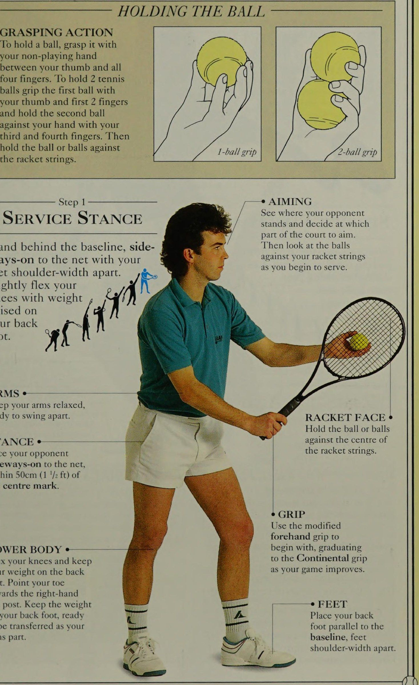
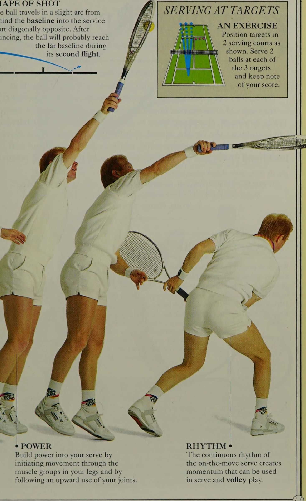
'CÚP DỊCH VỤ Định nghĩa: Cú đánh quan trọng của trận đấu vì nó bắt đầu và có thể giành được mọi điểm oe 'CÚP ĐÓ LÀ cú đánh Tàn phá nhất trong quần vợt. Từ một khởi đầu bất động - và 4 dường như vô hại -, cú giao bóng đúng giờ well7 sẽ bắn những quả bóng tennis vào sân đối thủ của bạn với tốc độ như một quả đại bác. Từ mắt cá chân trở lên, bạn sẽ cảm thấy một khối động lượng tăng lên nhịp nhàng khắp cơ thể, khi chân, hông, bụng, lưng, vai, cánh tay chơi và cổ tay của bạn tạo ra một phản ứng dây chuyền sức mạnh dẫn đến một vụ nổ “giải phẫu” khi va chạm. Hãy bắt đầu bằng cách cầm vợt thuận tay kiểu Eastern đã được sửa đổi, dần dần chuyển sang kiểu cầm vợt Continental.
MỤC TIÊU: Chỉ đạo diễn biến trận đấu và thiết lập các tình huống chiến thắng.
Đánh giá eee đến eeeee tùy vào khả năng thiên bẩm.
HÀNH ĐỘNG Ném KỸ NĂNG 'Hành động giao bóng chỉ đơn giản là một cú ném qua tay. Nếu bạn có thể ném bóng, bạn có thể giao bóng. 1 Từ phía sau đường cuối sân, lần lượt cùng đồng đội của bạn ném bóng qua lưới về phía đường cuối sân ở phía xa của sân. 2 Làm cho nó nảy gần vạch hoặc thậm chí chạm vào hàng rào trước khi nó nảy lên. 3 Sau khoảng 5 lần ném mỗi lần, hãy ném loạt bóng tiếp theo của bạn vào một trong các sân giao bóng đối diện theo đường chéo. 4 Vẫn lần lượt ném 5 quả sang phải rồi 5 quả sang ô giao cầu bên trái. Nếu bạn vẫn không thể đưa bóng đi đủ xa, hãy xoay vai thêm một chút để tăng khoảng cách.
GIỮ BÓNG Giữ cánh tay của bạn thư giãn, sẵn sàng vung ra.
MẶT VỢT Giữ bóng hoặc các quả bóng áp vào tâm của dây vợt.
TÌNH TRẠNG ¢ HÀNH ĐỘNG NẮM Để cầm một quả bóng, hãy nắm nó bằng bàn tay không chơi của bạn giữa ngón cái và cả bốn ngón tay. Để cầm 2 quả bóng tennis, hãy nắm quả bóng thứ nhất bằng ngón cái và 2 ngón đầu tiên và giữ quả bóng thứ hai vào tay bạn bằng ngón tay thứ ba và thứ tư. Sau đó cầm bóng hoặc các quả bóng chạm vào dây vợt.
Bước 1 TƯ THẾ DỊCH VỤ Đứng sau đường cuối sân, nghiêng người về phía lưới với hai chân rộng bằng vai.
Hơi cong đầu gối, tức là đầu gối của bạn dồn trọng lượng vào bàn chân sau. 4 CÁNH TAY ¢ Đối mặt với đối thủ của bạn nằm nghiêng trên lưới, trong phạm vi 50cm (1 '/2 ft) tính từ tâm điểm.
THÂN DƯỚI Co duỗi đầu gối và dồn trọng lượng vào bàn chân sau. Hướng ngón chân của bạn về phía cột lưới bên phải. Giữ trọng lượng ở chân sau, sẵn sàng chuyển sang phần cánh tay của bạn. Cách cầm 1 bi Cách cầm 2 bi, ví dụ: NHẮC NHÌN Xem đối thủ của bạn đứng ở đâu và quyết định nên nhắm vào phần nào của sân.
Sau đó, nhìn vào các quả bóng chạm vào dây vợt của bạn khi bạn bắt đầu giao bóng.
Cách cầm vợt Hãy sử dụng cách cầm vợt thuận tay đã được sửa đổi để bắt đầu, dần dần chuyển sang cách cầm vợt kiểu Continental khi trò chơi của bạn được cải thiện.
CHÂN Đặt bàn chân sau của bạn song song với đường cuối sân (baseline), hai chân rộng bằng vai.
CHÂN TRƯỚC Giữ chân trước của bạn cố định để hoạt động như một Giữ chân sau của bạn trong bệ phóng.
THỰC HÀNH KỸ NĂNG DỊCH VỤ ĐẶT BÓNG ĐỊNH VỊ BÀN CHÂN
MẮT KỸ NĂNG * Nhìn lên dọc theo cánh tay trái của bạn khi nhìn thấy quả bóng.
VỢT Hướng mặt đánh của đầu vợt xuống dưới và tạo một đường chéo từ đầu vợt đến bóng.
Từ từ vung cánh tay của bạn xuống, tách chúng ra ở hông. Hãy để vợt lướt qua tức là cơ thể của bạn và x tôi chuyển trọng lượng của bạn lên đầu gối đã gập gf 4 của bạn.
CHÂN SAU tiếp xúc với mặt đất để ổn định quá trình chuyển trọng lượng. 1 Vào tư thế giao bóng, cầm 1 quả bóng áp vào dây. Di chuyển cả hai cánh tay xuống một chút để tạo nhịp điệu. 2 Tách chúng ra, để vợt của bạn Vung vợt ra sau (Vung vợt ra sau (lấy đà)) trong khi bạn duỗi cánh tay trái lên để đặt quả bóng lên cao khoảng đánh đôi chiều cao của cánh tay dang ra của bạn. 3 Giơ tay lên và bắt bóng khi nó rơi xuống. Tập đi tập lại nhiều lần cho đến khi bóng rơi thẳng vào tay mà bạn không cần phải di chuyển.
ARMS Mở rộng hoàn toàn cánh tay ném của bạn trước khi bạn thả bóng, để vai bạn xoay nhẹ và giữ khuỷu tay của cánh tay giao bóng uốn cong khi bạn thu vợt về phía sau.
HIP Khi trọng lượng của bạn được chuyển sang đầu gối phía trước, hãy đẩy hông của bạn về phía trước để tạo thành một nền tảng đánh âm thanh.
Đặt bóng có chiều rộng bằng chiều rộng của quả bóng phía sau đường cuối sân và cách tâm điểm trong vòng 50cm (1'/2 ft). Để đặt chân, hãy hình dung một đường vẽ ngang phía trước ngón chân của bạn nhằm vào khu vực mục tiêu của bạn. đầu vợt vào tư thế ném.
ĐẦU GỐI LINH HOẠT Đầu gối trước của bạn phải là LỖI BÀN CHÂN Lỗi bàn chân phổ biến nhất là giẫm chân trước lên đường biên cuối sân trước khi đánh bóng.
Thủ phạm chính là chuyển tạ quá muộn hoặc đứng hai chân quá gần nhau trong tư thế giao bóng (xem trang 23, 47).
PLACE-UP PEAK Hướng đầu vợt và đặt tay lên khi bóng đạt đến đỉnh.
GRIP Giao bóng với kiểu cầm thuận tay đã được sửa đổi ban đầu, nhưng hãy sử dụng cách cầm Continental ngay khi bạn có thể, bởi vì nó mang lại phạm vi lớn hơn nhiều để phát triển các kỹ năng giao bóng cần thiết như Bật cổ tay và mở rộng cánh tay vợt.
CÁNH TAY VỢT Giữ cánh tay vợt cách xa cơ thể và khuỷu tay của nó cao khi bạn chuẩn bị thả ANCHORING Giữ chân sau tiếp xúc chắc chắn với Mặt sân.
Bước 3 PLACE-Up Đặt quả bóng lên trước mặt bạn và chếch về bên phải một chút. Khi bạn thả bóng, hãy uốn cong cánh tay vợt của bạn và nâng vợt lên cho đến khi đầu vợt hướng lên trời.
Khi hoàn thành Cw; ở tư thế lên, cả hai tay p N tai của bạn phải hướng về phía trước (i Pm ( uốn cong để chịu trọng lượng của bạn khi bạn di chuyển về phía trước. 7——* VAI Bằng cách giữ vai trái cao, bạn sẽ tạo ra một đường nâng lên xuống một cách trơn tru hoặc vào tư thế ném sâu giữa hai bả vai KHUỶU TAY của bạn.
Giữ vợt tránh xa PISTON POWER cơ thể bạn, thư giãn Sử dụng tường tập để cải thiện các cú đánh cơ bản của bạn. Khi thực hành giao bóng, đứng sau vạch cách 5-6m (15-20ft)
• ĐẦU GỐI vào tường. Trước tiên hãy thực hiện một vài cú giao bóng, Duy trì ANCHORING *¢ sau đó thực hiện trên các khía cạnh khác nhau một cách cân bằng so với thời gian của chân sau - như đặt vị trí lên và chuyển trọng lượng - đầu gối phía trước uốn cong giúp ổn định trước khi đưa chúng trở lại vị trí tổng thể trước khi đến vị trí ném như cú đánh để đo lường sự tiến bộ của bạn. phóng vợt. đà tập hợp lại.
KỸ NĂNG THẢ BÓNG Cánh tay đặt lên của bạn sẽ thả ra khi bạn ném đầu vợt lên để đón bóng. —_—___— Bước 4 ——_______ TƯ THẾ NÉN Đừng dừng lại, nhưng cảm thấy tạm dừng ở độ cao của cú bắt bóng, sau đó thả đầu vợt của bạn xuống Hãy coi vị trí này như một hình trụ và vợt của bạn như một pít-tông. Vợt đi xuống sẽ tập hợp vận tốc và tăng tốc khi nó bay lên, đạt tốc độ tối đa ngay trước khi đánh.
Vì vậy TƯỜNG LÀM VIỆC Ke ee TƯỜNG THỰC HÀNH qua vai để có lực đẩy tối đa. cùi chỏ và để đầu vợt rơi vào tư thế ném.
Bước 5 VỢT THE Hir Đánh vào lưng bóng bằng cách Duỗi thẳng chân và phóng đầu vợt lên trên. Dây của bạn. cơ thể sẽ duỗi ra hoàn toàn khi tiếp xúc, với TAY THẲNG TUYỆT VỜI, các ngón chân ở trong Bạn phải đánh bóng ở mức tiếp xúc hoàn toàn với vợt với tầm với của cánh tay thẳng hàng với mặt đất. vai đánh của bạn.
Thực hành đặt bóng CĂNG « một chút về bên phải của bạn để Ngay cả những cú giao Cú đánh phẳng nhất cũng phải mang một số Xoáy lên để kiểm soát, vì vậy hãy cố gắng để CHÂN phát triển cảm giác rằng bạn đang đánh Thẳng lên, xuyên qua và qua bóng. Điều này sẽ giúp chân khi đánh, cải thiện cả độ chính xác của bạn và của bạn khi chân sau không còn cố định nữa và Phát triển hiệu ứng máy phóng bằng cách duỗi thẳng hoàn toàn bên phải của bạn.
VAI Xoay cú đánh của bạn khi bạn chuẩn bị sẵn sàng cho hành động tiếp theo. rằng cánh tay vợt của bạn được duỗi thẳng hoàn toàn lên từ vai của bạn.
Khi đánh, cánh tay đặt lên sẽ hạ xuống để giúp cơ thể giữ Trọng tâm cơ thể. —CẢI THIỂU KIỂM SOÁT KIỂM SOÁT LÃI QUAY TOP cho lỗi trên lưới. Một quả bóng được giao với một đường bay vòng cung nhẹ cũng sẽ mở rộng vùng mục tiêu.
KỸ NĂNG -e PHỤC HỒI VỢT SWING Hãy để vợt của bạn vung Khi trọng lượng của bạn giảm xuống, hãy để qua bên trái của bạn khi đầu gối phải của bạn uốn cong để hỗ trợ tay trái của bạn vung vợt trở lại để hồi phục về phía sau đường cuối sân (baseline) giúp bạn giữ Trọng tâm cơ thể. để tập trung lại hoặc đóng vai trò như một bước mạnh mẽ đầu tiên trong quá trình chạy về phía trước nếu bạn đang chuyển sang thực hiện cú vô lê. 7 SỬ DỤNG CUỘC PHÁP GIAO CƠ BẢN Sân giao bóng bên trái, đủ giỏi để giao bóng bên phải, người nhận giao bóng thuận tay phải Ves của người nhận giao bóng thuận tay phải A Các trò chơi SEIvICEe thuận tay, B Body, C trái tay.
A Thuận tay, B Thân, C Trái tay MẮT Hãy để mắt đến quả bóng khi bạn thực hiện cú đánh.
Bước 7 Tiếp theo QUA Sau khi va chạm, cho phép vợt của bạn vung xuống qua chân trái của bạn theo một lượt hoàn toàn, đồng thời để vợt phải | »\ đu chân qua Hoa Kỳ ở đường cuối sân (baseline) để khôi phục lại sự cân bằng gw của bạn. gt TRỌNG LƯỢNG Kết thúc cú giao bóng cơ bản với trọng lượng dồn chắc vào chân phải.
CG PERCENTAGE PHỤC VỤ Nhằm mục đích đưa 70% số quả bóng đầu tiên của bạn vào sân và duy trì Điểm lợi thế (advantage) chiến thuật. Để đạt được điều này, hãy tập giao bóng với tốc độ ba phần tư, không dồn dập.
Khi bạn có thể giao bóng rộng, thẳng vào thân hoặc xuống trung tâm, chống lại những người chơi thuận tay phải hoặc tay trái một cách nhất quán, bạn sẽ CẮT DỊCH VỤ VỢT MẶT DỊCH VỤ THỨ HAI 'Dây vợt Giao bóng cắt lát là điểm tiên tiến trong việc cắt giảm hỏa lực giao bóng của bạn. Cú giao bóng ở phía bên phải của quả bóng Đổi hướng bóng mạnh trong không khí trước lúc 3 giờ. và sau khi bật lên, giữ ở mức thấp để đưa đối thủ của bạn ra khỏi sân.
Xoáy ngang giúp cú giao bóng trở nên an toàn, do đó, lý tưởng nhất là bạn nên sử dụng GRIP làm cú giao bóng thứ hai.
Sử dụng tay cầm Continental linh hoạt, có thể bắt được ở cổ tay. np Giao Cú đánh phẳng Bàn chân sau giao bóng sẽ vung về phía trước để phục hồi khi đánh.
VỊ TRÍ BÀN CHÂN vợt của bạn Đứng nghiêng sang một bên nhiều hơn để thực hiện cú giao bóng bằng cách di chuyển xuống qua bàn chân sau của bạn một chút về phía sau. chân trái trong Đặt bóng lên trước cú giao bóng cơ bản. bạn và một chút về bên phải của bạn.
TaN FOCUS Giữ đầu cố định và mắt tập trung chắc chắn vào quả bóng.
CÁNH VỢT e— Giữ thẳng khi tiếp xúc.
PHỤC HỒI Ổn định GÓC MẶT VỢI của bạn Xoay vai nhiều hơn để cắt bóng hơn là giao Cú đánh phẳng. Sau khi vai đã xoay vào trong, Mặt vợt nghiêng khi tiếp xúc (phía trên bên phải), trong khi toàn bộ Mặt vợt gặp bóng trong cú giao bóng cơ bản (phía trên bên trái). Thực hành chải dây vợt của bạn lên, ngang và xung quanh bên ngoài quả bóng.
KỸ NĂNG 5 DỊCH VỤ TRONG HÀNH ĐỘNG Mặc dù được thực hiện từ một vị trí cụ thể trên sân, nhưng cú giao bóng không phải là một cú đánh tĩnh. Nó có thể diễn ra ngay tại chỗ, nhưng từ khi hình thành đến khi hoàn thành, giao bóng phải diễn ra suôn sẻ qua nhiều giai đoạn của hành động khi đang di chuyển. Ở đây, cú giao bóng đã được xâu dây vợt để tạo ra một bức tranh về chuyển động liên tục có ý nghĩa sống còn đối với cú giao bóng. Hãy tưởng tượng bạn là người Giao bóng / Cú giao bóng và đặt các giai đoạn này lên trên giai đoạn tiếp theo — sau đó tưởng tượng chính bạn đang phân phát trên trang khi nét vẽ của bạn trôi chảy với nhịp điệu hoàn hảo khi di chuyển.
TƯ THẾ CHUẨN BỊ Sự ổn định được tăng cường bằng cách Đẩy xuống sân bằng cách đứng bằng chân bằng bàn chân sau, do đó kiểm soát được khoảng cách tốt cũng như tốc độ và hướng chính xác mà đầu gối của bạn hơi uốn cong. về sự chuyển trọng lượng của bạn.
• NHIỆT ĐỘ SỨC MẠNH ¢ Xây dựng sức mạnh cho cú giao bóng của bạn bằng cách 'Nhịp điệu liên tục của việc bắt đầu chuyển động thông qua cú giao bóng đang di chuyển sẽ tạo ra các nhóm cơ ở chân của bạn và bằng động lượng có thể được sử dụng sau khi các khớp của bạn sử dụng hướng lên trên. trong trò chơi giao bóng và cú volley.
HÌNH THỨC CÚT Bóng di chuyển theo một vòng cung nhỏ từ phía sau đường cuối sân vào sân giao bóng theo đường chéo đối diện. Sau khi nảy lên, quả bóng có thể sẽ chạm tới đường cuối sân (baseline) xa trong chuyến bay của tôi. a ttt MỘT BÀI TẬP Định vị mục tiêu ở 2 ô giao bóng như hình. Giao 2 quả bóng vào mỗi mục tiêu trong số 3 mục tiêu và ghi lại điểm số của bạn.
7. Chiều Thứ Bảy (16:15 - 17:30): Trả Giao Bóng Thực Chiến (Return of Serve) (Saturday Afternoon: The Return of Serve in Action)
NGÀY KỸ NĂNG 1 g DỊCH VỤ TRẢ LẠI@® Định nghĩa: Tầm quan trọng chỉ đứng sau giao bóng trong trận đấu 'Khả năng Trả giao bóng một cách nhất quán là một nghệ thuật được luyện tập và có ảnh hưởng lớn đến kết quả của mọi điểm. Về mặt chiến thuật, điều quan trọng là phải trả lại mọi cú giao bóng một cách hiệu quả nhưng sức mạnh giao bóng của đối thủ sẽ quyết định kiểu và chất lượng trả lời của bạn. Do đó, bạn phải học cách điều chỉnh các cú chạm đất cơ bản của mình để chống lại độ cao, tốc độ, độ xoáy và vị trí của quả giao bóng.
Ban đầu, khi Trả giao bóng, hãy sử dụng các cú công bóng thuận tay và trái tay cơ bản của bạn, sau đó điều chỉnh chúng để thực hiện các cú Trả giao bóng đặc trưng.
MỤC TIÊU: Giữ bóng trong cuộc và giành thế chủ động từ người giao bóng. Gps: Thuận tay và trái tay kiểu phương Đông cơ bản Giữ cổ tay chắc chắn và xòe LIÊN HỆ ngón tay đầu tiên của bạn để kiểm soát thêm.
Gặp bóng sớm VỊ TRÍ Bước qua bằng 2 chân phía trước và chặn về phía trước. tS erips. Xếp hạng ©** cho eeee TRẢ LẠI BỊ CHẶN Các pha trả bóng bị chặn được thực hiện bằng một cú lùi ngắn và cú đấm giống như cú vô lê. Đứng ngay bên trong đường biên ngang của bạn và nhận bóng sớm.
Chặn bóng từ phía sau, nhắm sâu về phía cuối sân để vô hiệu hóa Điểm lợi thế (advantage) của người giao bóng.
KIỂM SOÁT VỢI và ra phía trước cơ thể bạn. 1 COUNTER-VOLLEY 2 Cú giao bóng được thực hiện dọc theo đường biên tới trái tay của bạn từ sân bên phải (1). Với tư cách là người nhận bóng, hãy di chuyển về phía trước bên trong đường cuối sân của bạn và đánh bóng trả bóng ở vị trí thấp dưới chân ĐỒNG HỒ BÓNG Giữ mắt bạn tập trung vào quả bóng khi va chạm.
BƯỚC CHÂN Bàn chân có thể song song hoặc hơi nằm ngang theo đường bay của bóng.
GÓC VỢT Mặt vợt hơi nghiêng về phía sau để áp dụng việc kiểm soát xoáy xuống.
CHIPPED RETURN 6 bh SURPRISE RETURN 2 Trong 1, quả bóng được giao theo phương thẳng đứng khi tiếp xúc, vẫn mở ở mức IMPACT cao theo sau.
Thực hiện cú giao bóng có độ nảy cao theo hướng đi lên. Cái này đang được chắc chắn với một hành động đánh răng.
TẰNG ĐẸP ¢ Thực hiện cú trả bóng Xoáy lên từ vị trí nghiêng sang một bên.
THÚ VỊ TRẢ LẠI Di chuyển về phía trước bên trong đường biên ngang của bạn và tạo thành một cú lùi ngắn thấp thấp trước khi bước vào để quét đầu vợt của bạn lên phía sau quả bóng, tạo ra Xoáy lên nặng. gặp nhau ở độ cao ngang vai.
• GÓC Mặt vợt gần như GRIP Sử dụng cách cầm vợt trái tay kiểu phương Đông cơ bản của bạn cho cú đánh này, thực hiện cú trả bóng bằng cổ tay chắc chắn. Ở đây cú đánh được thực hiện Bước vào cú đánh để bạn có thể giữ bóng lâu hơn và kiểm soát tốt hơn. bạn sẽ không gặp khó khăn gì trong việc điều chỉnh chúng để tạo ra lợi nhuận cao và —° STANCE ở mức thấp được nêu ở đây. Hãy thử đánh vợt của bạn lại trên sân, tập trung vào ge khá cao. cú đánh thực tế và làm theo các gợi ý kỹ thuật được đưa ra.
CHIẾN THUẬT TRẢ LẠI TẤN CÔNG Sau một quả giao bóng ngắn (1), nhận bóng sớm và đánh xuống đường biên hoặc Đánh chéo sân (cross-court) (2). Máy chủ không có khả năng tiếp cận lưới sau một quả giao bóng có độ dài kém, vì vậy cú trả Bóng tấn công của bạn sẽ đặt anh ta vào thế phòng thủ và cho phép bạn di chuyển lên sân. Nếu anh ta giao bóng thậm chí còn ngắn hơn, hãy nghiêng cú trả bóng của bạn để tạo ra người chiến thắng.
LIÊN HỆ Gặp bóng với một cú xoay dẹt ở độ cao ngang vai.
TRẢ LẠI ĐƯỢC ĐIỀU KHIỂN Sau khi Trả giao bóng với TRẢ LẠI THẤP cơ bản của bạn ‘Để trả lại một cú giao bóng có độ nảy thấp cho trái tay của bạn, hãy cúi xuống ngang tầm bóng và bước tích cực vào cú đánh của bạn. Gặp bóng với Mặt vợt hơi góc cạnh để khuyến khích lực nâng.
BALANCE Hãy để bàn tay còn lại của bạn giúp cân bằng lại hành động đánh của bạn.
Xoay sang một bên TRẢ LẠI ĐƯỢC ĐIỀU KHIỂN CAO Tư thế thẳng hơn nhiều so với tư thế quay về được định hướng thấp.
Phần III: Làm Chủ Lưới Đấu: Bắt Volley Tinh Tế & Cú Đập Smash
8. Sáng Chủ Nhật (09:00 - 10:30): Kỹ Năng Bắt Volley Trên Lưới (Forehand & Backhand Volley) (Sunday Morning: Mastering the Net - Forehand & Backhand Volley)
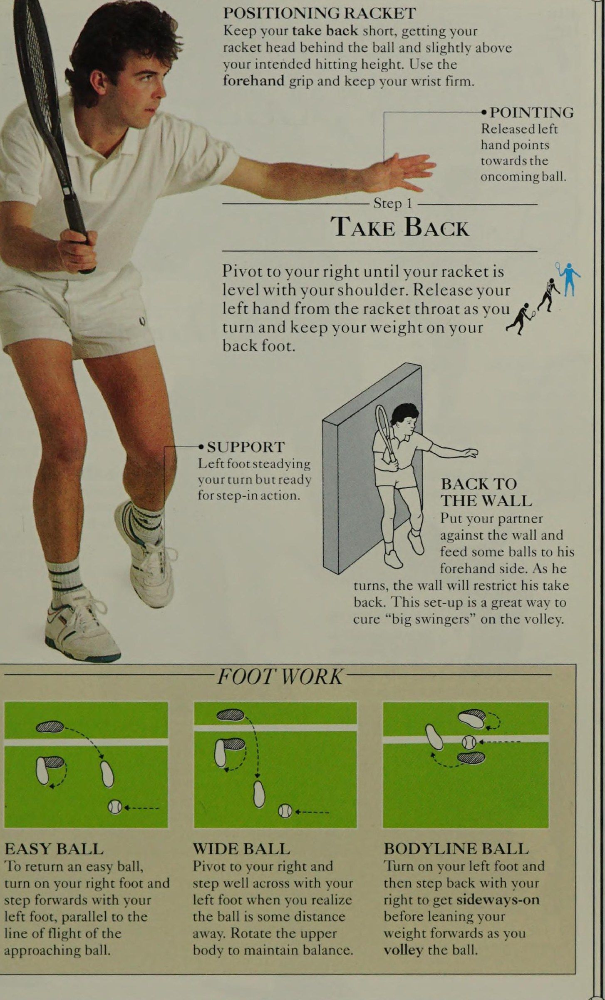
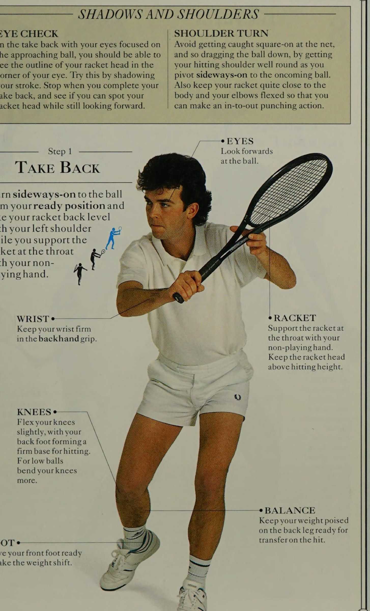
THUẬN TAY Định nghĩa: 70 p/lần đánh bóng trong lần bay đầu tiên của nó, trước đó là g 'Cú volley NÊN ĐƯỢC CHƠI giống như cú đấm của võ sĩ quyền Anh. Tiến về phía lưới và thọc vợt của bạn về phía trước trong 3 giờ để gặp bóng trước khi nó nảy lên. Cả hai cú vô lê thuận tay và trái tay đều là những cú đánh IY ngắn, mạnh mẽ, di chuyển trên một đường từ cao xuống thấp, so với những cú xoay từ thấp đến cao của những cú chạm đất tương đương của chúng.
MỤC TIÊU: 'Để nhanh chóng đối thủ của bạn thực hiện cú đánh tiếp theo và, bất cứ khi nào có thể, đặt bóng ngoài tầm với của anh ta từ khoảng cách gần. cân bằng chuyển động của bạn.
MẮT +——-= Tập trung xem các bản ballas mà bạn nắm bắt được với khả năng kiểm soát chắc chắn và chính xác. tay chơi của bạn. Đứng bằng FEET ở phía đối diện của lưới để Step ery đỡ đối tác của bạn, khoảng 3m (10ft) và người chơi bóng Dh, về phía sau. Yêu cầu đối tác của bạn thực hiện động tác eed hae 4 để ổn định quả bóng ném dưới cánh tay khi chuyển động với chiều cao ngang vai. Tiếp cận bằng chân sau của bạn. về phía trước và nắm lấy nó trước mặt Ling của bạn, như được hiển thị ở đây. vi
KỸ NĂNG LẤY BÓNG Động tác vô lê thuận tay cũng giống như bắt bóng bằng COUNTERBALANCE ¢ Luôn dùng tay thuận để TAY Nắm bóng sang một bên và phía trước cơ thể trước khi nó rơi xuống đất.
ĐỊNH VỊ VỢI Nhả tay trái chỉ về phía quả bóng đang tới của Jf.
Bóng ngon ăn (sitter) DÀNG BÓNG THÂN THỂ 'Để trả Bóng ngon ăn (sitter), Xoay người sang phải và 'Quay chân trái, Lực đạp chân phải và bước ngang bằng chân trái rồi lùi lại bằng bước tiến về phía trước bằng chân trái khi bạn nhận ra đúng để bước sang ngang bằng chân trái, song song với bóng một khoảng cách trước khi nghiêng đường bay của bạn về phía xa. Xoay trọng lượng phía trên về phía trước khi bạn tiếp cận bóng. cơ thể để giữ Trọng tâm cơ thể. bắt volley.
Giữ cú trả bóng ngắn, đặt đầu vợt của bạn phía sau quả bóng và cao hơn một chút so với độ cao đánh dự định của bạn. Sử dụng cách cầm thuận tay và giữ chắc cổ tay của bạn. ————————* CHỈ
Bước 1 LẠI LẠI Xoay sang phải cho đến khi vợt ngang tầm với vai của bạn. Thả tay trái của bạn ra khỏi cổ vợt khi bạn xoay người và giữ trọng lượng của bạn ở chân sau IY.
HỖ TRỢ Chân trái vững vàng trong lượt nhưng sẵn sàng bước vào.
TRỞ LẠI TƯỜNG Đặt đối tác của bạn dựa vào tường và đưa một số quả bóng về phía thuận tay của anh ấy. Khi anh ta quay lại, bức tường sẽ hạn chế việc anh ta lùi lại. Cách thiết lập này là một cách tuyệt vời để chữa trị cho những “tay vợt lớn” trong cú vô lê.
FOOT WORK mặt của dây vợt của bạn. chiều cao giữa eo và vai. vào lúc đánh. Đấm xuống và xuyên qua quả bóng.
THE GRAB-
KỸ NĂNG
Bước 2 7 ĐÁNH ĐẤM Đấm đầu vợt của bạn về phía trước để gặp bóng AY ở phía trước cơ thể bạn ra ’ PUNCH POSITION Đưa bóng cao hơn và gần cơ thể bạn hơn so với khi chơi cú đánh mặt đất. Cố gắng chơi bóng ngang tầm mắt.
HƯỚNG Bước bước song song hoặc hơi ngang qua đường bay của quả bóng.
ĐIỂM LIÊN HỆ Gặp bóng bằng toàn bộ CÁNH TAY VỢT Duỗi thẳng tay vợt của bạn CÂN BẰNG 'Chuyển trọng lượng của bạn một cách tích cực lên đầu gối trước đang cong của bạn.
CHIẾN THUẬT NÓI Cc A Góc nhọn đa dạng TIẾP CẬN CFOsscourt Từ một vị trí lưới âm thanh, cú vô lê sâu xuống đường biên Zae oan hoặc ngang qua sân để ghim N-he-line đối thủ ở sân sau; hoặc thử một sân chéo có góc cạnh
Bước 3 es eee Spree TẬP TRUNG THEO QUA Đầu ổn định và mắt nhìn vào quả bóng.
Đường đi xuống nhẹ của vợt của bạn sẽ tạo thêm độ xoáy xuống để kiểm soát cú đánh. Phần 3 tiếp theo của bạn phải ngắn gọn.
VAI « Đánh xuyên qua sức mạnh của vai.
BACK FOOT Bàn chân sau của bạn tiến về phía trước khi cú đánh ~) hoàn tất để hỗ trợ phục hồi. -—* CÁNH TAY CHƠI Giữ cánh tay vợt của bạn thẳng và đầu vợt cao hơn cổ tay.
Cẳng tay Sử dụng cách cầm thuận tay (“Bắt tay”), với ngón tay đầu tiên dang rộng và khuỷu tay của bạn cách xa cơ thể. Tiếp tục nắm giữ Continental như của bạn
kỹ năng được cải thiện.
THÂN DƯỚI Uốn cong đầu gối để có độ ổn định tốt và trọng tâm thấp.
CHÂN TRƯỚC Duy trì một nền tảng đánh vững chắc trong các pha tiếp theo.
BÓNG CHUYỀN THUẬN TIỆN TRONG HÀNH ĐỘNG 7 Bên cạnh Cú đập trên đầu (smash) bóng, cú vô lê có lẽ là cú đánh quyết định nhất trong quần vợt và có thể là cú đánh quyết định trận đấu trong tiết mục của bạn. Ngay sau khi bạn đã thành thạo các kỹ năng cơ bản của cú vô lê từ vị trí trên lưới, bạn nên bắt đầu từ phía sau xa hơn và sau đó tập chạy về phía trước để thực hiện cú vô lê khi đang di chuyển.
DỰ ĐOÁN ¢ Luôn mang theo vợt trước mặt như một thanh kiếm, sẵn sàng hành động ngay lập tức.
ĐỊNH VỊ Ở đây, người chơi thực hiện bước tách đôi để đọc độ cao và hướng cú đánh của đối phương trước khi di chuyển để Vô-lê chặn.
TỰ KIỂM SOÁT Hãy chống lại sự cám dỗ thực hiện cú vung vợt khi bạn đang thực hiện cú vô lê khi đang di chuyển.
CÁC BÓNG CHUYỀN THAY THẾ BÓNG CHUYỂN TAY THẤP CAO Để chơi một cú vô lê thấp thậm chí khá tốt BACKHAND, bạn phải cúi xuống, uốn cong đầu gối BÓNG CHUYỂN để có thể giữ cổ tay của mình. Để chơi một cú vô lê cao thực sự tốt, hãy đặt mình sang một bên, nếu không bạn phải giữ vững và giữ đầu vợt ngang bằng. Thực hiện cú vô lê thấp của bạn bằng cách bước về phía trước và ngang bằng chân trước, hơi nghiêng Mặt vợt của bạn để tạo ra một số xoáy xuống khi bạn đấm xuyên qua mặt sau của quả bóng. có thể kéo bóng vào lưới hoặc đánh ra ngoài biên. Những cú vô lê cao cần cánh tay khỏe để đấm bóng mạnh ở độ cao ngang vai, vì vậy hãy tiếp tục rèn luyện thể lực (xem trang 16—-19).
Kiểm soát PACE rất quan trọng vì vậy tốc độ được truyền đạt bằng cách tiến về phía bóng chứ không phải bằng độ dài của cú trả bóng.
BACKHAND Định nghĩa: Giống như cú vô lê thuận tay, nó là một cú đánh ngắn, giống như cú đấm được thực hiện chủ yếu từ sân trước BẠN CÓ THỂ THẤY rằng cú vô lê trái tay dễ thực hiện kK hơn so với cú vô lê ở phía thuận tay, 2 9 vì khi bạn ở tư thế nghiêng sang một bên, cánh tay chơi của bạn sẽ dẫn đường và khuyến khích hành động tích cực. Như với tất cả các cú vô lê, vấn đề chính là thời gian - bạn có thể có ít hơn nửa giây để thực hiện cú đánh của mình. Cú đấm sắc nét tự nhiên của cú vô lê trái tay khiến nó trở thành công việc phù hợp cho những pha vô lê nhanh trên lưới, nơi lối chơi hoàn toàn là phản xạ.
MỤC TIÊU: Để giảm thiểu thời gian cho đối thủ của bạn thực hiện cú đánh tiếp theo và giành được điểm hoặc buộc phải quay lại phòng thủ. Đánh ee nhưng sau đó hãy quay lại vị trí sẵn sàng giữa mỗi cú vô lê.
GRIP Bắt đầu với CÔNG TRÌNH TƯỜNG BÓNG CHUYỀN phía Đông Hãy thử thực hiện cú vô lê dựa vào tường tập, đứng cách khoảng 2 m (6 ft 6 in).
Điều này làm ngắn cú đánh của bạn và cải thiện khả năng kiểm soát đầu vợt của bạn.
Giữ một cuộc đua tập hợp 10-, sau đó là 20- shot. sẽ bắt đầu và sau đó nhắm vào mục tiêu trên tường để có độ chính xác cao hơn. Bắt đầu từ tư thế nghiêng người, cầm vợt trái tay, dần dần chuyển sang kiểu Continental để thực hiện cú vô lê khi bạn đã thành thạo hơn.
BÓNG VÀ VAI KIỂM TRA MẮT VAI TURN Khi quay lại với đôi mắt tập trung vào | Để tránh bị bắt trực tiếp trên lưới, bóng đang đến gần, bạn có thể tôi và do đó, hãy kéo bóng xuống bằng cách nhìn rõ đường viền của đầu vợt ở vai đánh của bạn tròn ở khóe mắt của bạn. Hãy thử điều này bằng cách tạo bóng cho trục quay sang một bên đối với quả bóng đang tới. cú đánh của bạn. Dừng lại khi bạn hoàn thành | Ngoài ra, hãy giữ vợt của bạn khá gần với điểm thu vợt và xem liệu bạn có thể nhận thấy cơ thể và khuỷu tay của mình uốn cong sao cho đầu vợt vẫn nhìn về phía trước hay không. có thể thực hiện động tác đấm từ trong ra ngoài.
Bước 1 Nhìn về phía trước quả bóng.
THU LẠI VỢT CỔ TAY Giữ chắc cổ tay Hỗ trợ vợt ở tay cầm trái tay. cổ họng bằng bàn tay không chơi của bạn.
CÂN BẰNG Giữ trọng lượng của bạn ở Tư thế sẵn sàng ở chân sau để sẵn sàng chuyển CHÂN khi đánh.
Xoay ngang sang bóng từ vị trí sẵn sàng của bạn và đưa vợt về phía sau ngang bằng vai trái trong khi bạn đỡ vợt kK ở cổ họng bằng tay không chơi. 5 ae Giữ đầu vợt ở trên độ cao đánh bóng.
ĐẦU GỐI Cong đầu gối của bạn một chút, với bàn chân sau tạo thành điểm tựa vững chắc để đánh.
Đối với bóng thấp, hãy uốn cong đầu gối của bạn nhiều hơn.
Chuẩn bị sẵn sàng cho bàn chân trước của bạn để thực hiện chuyển trọng lượng.
KỸ NĂNG
Bước 2 ARME THE HIT Mở rộng cánh tay chơi của bạn, khóa cổ tay của bạn và thả tay trái của bạn ra, bước giữ vợt của bạn về phía trước và ngang qua hơi ổn định. bằng chân phải, khi bạn đấm đầu vợt về phía trước để gặp bóng, sử dụng toàn bộ mặt của 2 dây vợt.
HÀNH ĐỘNG Đấm Chuẩn bị đầu vợt của bạn phía sau và phía trên quả bóng một chút.
Đấm đầu vợt về phía trước và xuống qua mặt sau của quả bóng.
Siết chặt tay cầm, khóa cổ tay và giữ cho vợt của bạn HỖ TRỢ TRỌNG LƯỢNG 'Chuyển toàn bộ trọng lượng của bạn qua đầu gối cong phía trước của bạn khi đánh. ngẩng đầu lên.
HỖ TRỢ Thả tay trái của bạn ra để hỗ trợ giữ Trọng tâm cơ thể.
LIÊN HỆ Gặp bóng ở độ cao giữa eo và vai.
Cố gắng giữ song song hoặc hơi ngang qua đường bay của quả bóng.
Để đầu vợt của bạn theo TƯ THẾ *———Xu hố Nghiêng toàn bộ cơ thể của bạn trong một khoảng cách ngắn về phía trước khi bạn chơi nN — hoàn thành cú đánh xuyên bóng. eh khu,mở rộng cánh tay vợt của bạn khi bạn Lê chơi ngay qua quả bóng. Hành động chạy hơi hướng xuống của vợt với cạnh dưới dẫn đầu sẽ áp dụng một số cách Giữ hai chân của bạn cách xa nhau để hỗ trợ sự ổn định và hạ thấp trọng tâm của bạn.
AG trong phần tiếp theo ms BÓNG CHUYỀN CHIẾN THUẬT BÓNG CHUYỂN ANGLED \ A Cú Cú trái tay (backhand) góc cạnh Đưa bóng sâu vào các góc của cú vô lê của bạn \ B Cú Cú trái tay (backhand) sâu fo) gần như phù hợp với phần sân của đối thủ ở giữa, đặc biệt là từ giữa sân| Khu vực Sillegs. Khi bạn tiến lại gần hơn sẽ có cơ hội thực hiện những cú vô lê góc cạnh. Hãy cố gắng thực hiện cú vô lê thẳng trong hầu hết thời gian, hãy nhớ rằng khi thực hiện cú vô lê Đánh chéo sân (cross-court), bạn phải quyết đoán vì điều đó có thể tạo ra một cú chuyền dọc biên cho đối thủ hoặc thậm chí là một góc Đánh chéo sân (cross-court) sai chân —nếu đối thủ có thể chạy xuống bóng.
CÁNH TAY KHÔNG CHƠI ¢ Tay trái đưa ra để giữ Trọng tâm cơ thể. ---_—_— Bước 3 Theo sau QUA xoáy xuống bóng để tăng khả năng kiểm soát.
STEP-IN Stepin được kiểm soát giúp bạn bám bóng ổn định
KỸ NĂNG 8 BÓNG CHÁY TRÁI TRONG HÀNH ĐỘNG Các cú Cú trái tay (backhand) thường được coi là các cú đánh phòng thủ, nhưng điều này không xảy ra khi bạn đã thành thạo việc thực hiện cú vô lê trái tay trong thực tế. Phát triển trình tự theo cách tương tự như khi bạn thực hiện cú vô lê thuận tay, bắt đầu từ xa hơn về phía sau và sau đó chuyển nhanh sang cú vô lê.
Ở đây, người chơi thể hiện tầm quan trọng của việc tiếp bóng tốt và chuyển trọng lượng cơ thể vào cú đánh. Mặt vợt hơi góc về phía sau khi va chạm cho thấy rằng người chơi đã thực hiện cú vô lê đầu tiên ngay bên trong đường giao bóng và bây giờ sẽ di chuyển đến gần lưới hơn, tìm kiếm điểm hạ gục bằng cú vô lê thứ hai của mình. bị đấm xuyên qua mặt sau của quả bóng.
BƯỚC VÀO ¢ Tay không chơi được thả ra và đầu vợt TẬP TRUNG Quan sát bóng là nền tảng cho sự thành công của kỹ năng bắt volley khi đang di chuyển của bạn, vì vậy hãy chú ý theo dõi bóng trong suốt cú đánh.
SS(iii và đấm vào đầu vợt của bạn bên dưới và TƯƠI ¢ xuyên qua quả bóng. Dùng mép dưới của vợt để tạo xoáy xuống và thực hiện cú vô lê trái tay tạo lực nâng để vượt qua lưới. Thành công với hai chân cách xa nhau và phụ thuộc vào cổ tay vững chắc và cơ thể được kiểm soát cân bằng tốt. đầu vợt, được giữ ở ngang hoặc cao hơn cổ tay.
SỬA CHỮA ¢————] Luôn chuẩn bị sẵn vợt để thực hiện cú đánh về phía trước của bạn. Ở cú vô lê cao, hãy đưa vợt của bạn về phía sau cao hơn so với cú vô lê cơ bản để duy trì cảm giác khi thực hiện cú đánh từ cao xuống thấp.
CÚT Tấn công một quả bóng thấp sẽ khó hơn một quả bóng trên lưới nhưng bạn không cần phải chơi phòng thủ. Cong đầu gối của bạn, đưa mắt xuống ngang tầm bóng, sau đó bước vào Sự ổn định là quan trọng, vì vậy
9. Sáng Chủ Nhật (10:45 - 12:00): Cú Đập Bóng Overhead Smash & Phòng Thủ Cắt Lốp (Sunday Morning: The Smash Attack, Jump Smash & Lob Defence)
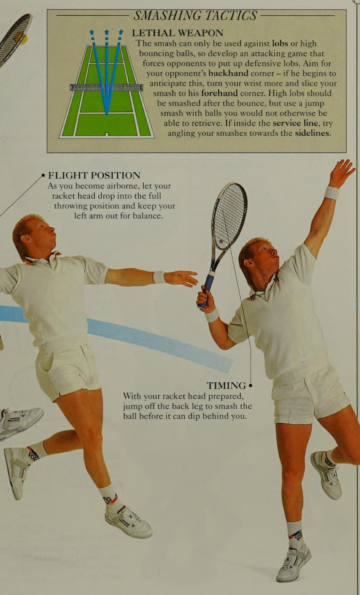
Định nghĩa: Cú chạm đất đưa bóng lên cao trong Ly 'THE LOB KHÔNG ĐƠN GIẢN là tuyến phòng thủ cuối cùng của SS (\ Tung bóng lên cao và cầu nguyện cho một phép màu. Sử dụng Cú lốp bóng (lob) của bạn như lính nhảy dù, thả chúng ra phía sau hàng tấn công của đối thủ và tự mình áp sát vào lưới khi anh ta chạy lùi về căn cứ phòng thủ.
Đừng đợi cho đến khi anh ấy cắm trại ở sân trước - một cú Cú lốp bóng (lob) sớm có thể tàn phá Sự Sự tự tin của anh ấy. 'Cú Cú lốp bóng (lob) là một cú đánh đầy đủ hơn so với cú công bóng, với độ lùi thấp hơn và độ Kết thúc cú đánh cao hơn.
MỤC TIÊU: Phòng thủ bất khả xâm phạm và phản công bất ngờ. Cách cầm vợt: như đối với các cú công bóng thuận tay và trái tay. Đánh giá tư thế eee Bước vào đầu gối trước đã uốn cong của bạn khi bạn bắt đầu xoay người về phía trước từ khi thu lại.
Xuống và vòng xuống thấp.
KỸ NĂNG không khí. Chủ yếu là một cú sút phòng thủ eo
Bước 2 Lùi lại Bắt đầu cú đánh của bạn giống như một Cú đánh thẳng (drive), thu vợt về phía sau khi bạn xoay người sang một bên. Thư giãn khuỷu tay của cánh tay cầm vợt của bạn khi Kết thúc cú đánh cú thu bóng, để vợt của bạn tạo thành một vòng thấp. Bước vào và bắt đầu vung đầu vợt về phía trước theo đường dốc hướng lên trên.
CẦM Sử dụng kiểu cầm vợt phía Đông (“Bắt tay”) và giữ cho Mặt vợt mở. | NHẬN THẤP ¢ dẫn đầu hông. Siết chặt tay cầm của bạn khi va chạm để ổn định cổ tay của bạn.
Tính thời gian cho cú vung của bạn để chạm bóng. THÂN TRÊN Giữ đầu cố định và mắt nhìn vào bóng.
Tay trái lùi về nhưng vẫn đóng vai trò ổn định khi bạn chuyển sang đánh.
TƯ THẾ Hãy ngồi xuống và thực Sự tập trung vào cảnh quay. ---e CÂN BẰNG TAY Hướng tay trái về phía quả bóng để giúp bạn giữ Trọng tâm cơ thể. ee PiiGH il PAl a Cú Cú lốp bóng (lob) cơ bản mang lại một ít Xoáy lên nhờ độ vung vợt từ thấp đến cao và góc Mặt vợt. Nó sẽ di chuyển theo một hình cung đều, vượt qua lưới khoảng 7m (20ft) và tiếp đất ngay bên trong đường cuối sân (baseline) đối diện. Bạn sẽ có được chuyến bay thứ hai khá cao sau khi bật lên.
Bước 3 NỀN TẢNG HIIrT GÓC bàn chân trái của bạn tạo ra âm thanh Giữ bệ đánh vợt, mặt góc cạnh hỗ trợ độ cao trở lại để nâng — và Độ sâu của bóng nhưng không quá cú Cú lốp bóng (lob) của bạn. nhiều hoặc thùy sẽ giảm xuống.
THEO ĐUỔI CAO Việc bắt đầu cú Cú lốp bóng (lob) giống như cú lái thường có thể khiến đối thủ của bạn mất cảnh giác, nhưng việc theo sau là một cơ hội chết người. Sau khi tiếp bóng, hãy để vợt của bạn vung lên qua khu vực đánh bóng, đồng thời bạn duỗi thẳng chân và thực sự giữ bóng, đưa bóng lên cao.
Kết thúc cú đánh bằng vợt ở trên đầu.
KỸ NĂNG 9 BACK HAY TRONG HOẠT ĐỘNG Thực hiện cú Cú lốp bóng (lob) trái tay cơ bản bằng cách điều chỉnh đơn giản cú công bóng trái tay và tạo ra một cú đánh tương tự như cú Cú lốp bóng (lob) thuận tay. Chuyển sang cách cầm vợt trái tay, sử dụng tay còn lại trong quá trình thu bóng. Ở đây, người chơi đã di chuyển rộng từ vị trí trung tâm để thực hiện một cú Cú lốp bóng (lob) phòng thủ nâng cao với xoáy xuống, để chống lại đòn tấn công vào lưới của đối thủ. Tốc độ tiếp bóng của người chơi kết hợp với khả năng kiểm soát vợt của anh ta khi va chạm đã tạo ra một cú Cú lốp bóng (lob) được đo lường hoàn hảo, có thể dễ dàng chuyển phòng thủ thành tấn công. di chuyển theo đường chéo về phía sau để tiếp cận bóng.
CHIẾN THUẬT LOBBING HAI PHONG CÁCH Nói chung, Cú lốp bóng (lob) sâu và lốp ngắn đều được người chơi trên lưới chộp lấy. Cú lốp bóng (lob) qua vai không chơi của đối thủ tới góc trái tay của anh ta vì Cú đập trên đầu (smash) bóng sẽ khó thực hiện hơn nếu bạn phải thực hiện. Ở đây, một cú Cú lốp bóng (lob) trái tay tấn công được thực hiện theo đường chéo (A) và một cú Cú lốp bóng (lob) thuận tay sâu hơn được thực hiện dọc theo đường biên (2). Cú Cú lốp bóng (lob) trái tay có thể được thực hiện với Xoáy lên để làm cho bóng nảy mạnh ra khỏi đối thủ của bạn.
TẬP TRUNG Hãy để mắt đến quả bóng trong suốt khu vực đánh bóng và quan sát để xem hiệu quả của cú Cú lốp bóng (lob) của bạn.
THEO QUA Cân bằng tuyệt vời trong việc theo dõi, người chơi có toàn quyền kiểm soát chuyển động, vợt và bóng của mình. Cách cầm vợt trái tay cơ bản đã được sử dụng để thực hiện cú Cú lốp bóng (lob) trái tay nâng cao khi đang di chuyển này.
• GÓC VỢT Sau khi đã quyết định đánh bóng sớm với xoáy xuống, hãy chuẩn bị vợt của bạn với một NỀN ĐÁNH đánh trả lại cao ngắn khi bạn Xuống ngay để thực hiện cú đánh, tiếp cận khu vực đánh. dang rộng hai chân và a (Bằng cách DI CHUYỂN e Sau khi theo dõi đường bay của bóng và ghi nhớ điểm nhắm của đối thủ, hãy di chuyển nhanh chóng theo đường chéo về phía trước để Vô-lê chặn ngay sau khi nảy. Trọng tâm thấp. Với Mặt vợt nghiêng về phía sau, xoáy xuống sẽ được áp dụng.
KỸ NĂNG 2 ĐÁNH ĐẤU a Định nghĩa: Thuốc giải độc mạnh mẽ cho cú Cú lốp bóng (lob) yi 'Cú đập trên cao LÀ một sát thủ lưu động đang chờ 2 người để tấn công và loại bỏ bất kỳ cú Cú lốp bóng (lob) yếu nào được tạo ra bởi đối thủ đang bị bao vây bởi đòn tấn công lưới của bạn. Khi anh ta sử dụng các cú Cú lốp bóng (lob) phòng thủ hoặc tấn công để cố gắng thoát khỏi tình thế khó khăn của mình, bạn phải đập sâu bằng cách sử dụng hành động giơ tay tương tự như giao bóng.
MỤC TIÊU: ‘Yo duy trì thế chủ động tấn công và giành được điểm hoàn toàn.
Bước 2 Hướng lên ĐIỂM LÊN Duỗi thẳng cánh tay trái của bạn và hướng lên trên quả bóng đang rơi.
Xoay sang một bên và nâng đầu vợt của bạn lên bằng cách uốn cong khuỷu tay của bạn. Bieake AIM Nhìn lên dọc theo cánh tay của bạn tại quả bóng. giao bóng. Khuỷu tay của bạn Giữ khuỷu tay của bạn cao và vợt của bạn sẵn sàng thả vào vị trí ném.
TẦM NHÌN TỪ TRÊN Tiếp tục hướng lên trên quả bóng khi bạn xoay sang một bên, đồng thời đưa vợt qua vai trước khi thả sâu vào vị trí ném. --e Neo Đặt hai chân rộng bằng vai để giữ Trọng tâm cơ thể.
ĐIỂM LIÊN HỆ e— phí tC) POOLWORK Đánh bóng về phía trước bạn aD eS Lay BƯỚC BÊN 'Để thực hiện các Cú đập trên đầu (smash) nhanh chóng, bạn cần giữ người nghiêng về phía bóng khi bạn đặt mình ở phía sau và bên dưới quả bóng.
Động tác bằng chân cho bước nhảy sang một bên rất đơn giản. Chỉ cần quay và di chuyển sang bên phải của bạn. Bước ngang bằng bên phải của bạn.
Lặp lại cho đến khi bạn vào vị trí. hành động chân cùng bên.
Bước 4 THE HIT Mở rộng hoàn toàn cánh tay vợt của bạn khi bạn ném đầu vợt của mình lên để gặp bóng, với toàn bộ Mặt vợt. Đánh bóng ra trước mặt bạn và Kết thúc cú đánh” cú đánh như một cú giao bóng. __ HÌNH DẠNG SÚT—% của A Cú đập lưới B Cú đập sâu Từ cự ly gần trên lưới, bạn có thể nghiêng cú đánh của mình hoặc khiến nó nảy qua đầu đối thủ.
Từ xa hơn, đập bóng sâu và cố gắng duy trì đòn tấn công của bạn. vy atracketarm tầm với.
GRIP Bắt đầu với cách cầm vợt kiểu Eastern đã được sửa đổi và tiến dần đến cách cầm giao bóng.
DÒNG NGHIÊNG TỰ NHIÊN Kéo giãn và nghiêng toàn bộ cơ thể.
VAI NÓ Hãy để vai chơi của bạn xoay mạnh mẽ theo cú đánh.
CÂN BẰNG Trọng lượng dồn về phía trước và chân duỗi thẳng.
ỔN ĐỊNH Bàn chân sau của bạn sẽ ổn định lực tác động của Cú đập trên đầu (smash) cơ bản.
KÍN NHẸ Hãy kiễng chân lên khi va chạm.
KỸ NĂNG 10 NHẢY ĐẬP TRONG HÀNH ĐỘNG 'Cú cú nhảy đập bóng (jump smash) bóng là hình ảnh thu nhỏ của hành động đang di chuyển, tuy nhiên ở bên dưới, người chơi đứng yên ở giữa không trung khi đập bóng. Kiểu đập bóng này lý tưởng để khắc phục bất kỳ sự thiếu tầm với nào mà bạn có thể gặp phải và để đối phó hiệu quả với những cú Cú lốp bóng (lob) sâu có thể khiến bạn bị mắc kẹt ở sân trước. Để thực hiện cú đánh thực sự tốt, bạn phải phát triển tốc độ và sự nhanh nhẹn để di chuyển về phía sau trong tư thế nằm nghiêng và sức mạnh ở chân để nhảy cao trên không. Trên sân, bật sang một bên ngay khi cú Cú lốp bóng (lob) đi lên và sử dụng bước tách đôi cho cú chạy lùi của bạn.
THEO HÀNH ĐỘNG QUA CHÂN Sau khi đánh bóng lên và qua bóng, Hãy để chân phải của bạn vung qua chân trái bằng chân trái và thực hiện động tác giống như cắt kéo khi bạn ném bóng theo cách tương tự với đầu vợt của bạn hướng lên trên để gặp bóng phía trên và đập cơ bản. trước mặt bạn trong tầm với của tay vợt. 7 bt rj CHIẾN THUẬT Đập bóng smash vũ khí sát thương Cú đập trên đầu (smash) chỉ có thể được sử dụng để chống lại những cú Cú lốp bóng (lob) hoặc những quả bóng có độ nảy cao, vì vậy hãy phát triển một trò chơi tấn công buộc đối thủ phải thực hiện những cú Cú lốp bóng (lob) phòng thủ. Nhắm vào góc trái tay của đối thủ - nếu anh ta bắt đầu đoán trước điều này, hãy xoay cổ tay của bạn nhiều hơn và tung Cú đập trên đầu (smash) của bạn vào góc thuận tay của anh ta. Những cú Cú lốp bóng (lob) cao phải được đập sau khi bật lên, nhưng hãy sử dụng Cú đập trên đầu (smash) bóng bằng cú nhảy mà bạn sẽ không thể lấy lại được. Nếu ở trong đường giao bóng, hãy thử hướng Cú đập trên đầu (smash) của bạn về phía đường biên.
VỊ TRÍ BAY Khi bạn bay lên không trung, hãy để đầu vợt của bạn thả vào tư thế ném hoàn toàn và giữ cánh tay trái của bạn ở ngoài để giữ Trọng tâm cơ thể.
THỜI GIAN Với đầu vợt đã chuẩn bị sẵn, hãy nhảy ra khỏi chân sau để đập bóng trước khi nó lao xuống phía sau bạn.
Phần IV: Đòn Cảm Giác, Chiến Thuật Trận Đấu & Lộ Trình Tương Lai
10. Chiều Chủ Nhật (14:30 - 15:30): Đòn Cảm Giác – Đánh Áp Sát Lưới, Giao Bóng Lên Lưới & Đòn Nâng Cao (Sunday Afternoon: Approach Play, Serve & Volley & Advanced Touch Strokes)
Định nghĩa: Một cú chạm đất được sửa đổi để tấn công lưới TRONG CHƠI TIẾP CẬN, vị trí của cú đánh của bạn là yếu tố quan trọng thứ 2 đối với sự thành công của bất kỳ cuộc tấn công nào. Cho phép 3 của bạn. vị trí và độ cao mà bạn đánh bóng để quyết định cú đánh, nhưng hãy rút ngắn thời gian trả bóng để kiểm soát tốt hơn. Sau khi đến sân trước, hãy sử dụng các kỹ năng bắt volley mà bạn đã thành thạo.
MỤC TIÊU : Tạo cơ hội cho cú vô lê quyết định.
Xếp hạng kiểu cầm vợt: Đối với các cú đánh chạm đất Các bước 1-2 TIẾP CẬN SÚT Cú đánh được mô tả ở đây là một cú cắt trái tay. Thực hiện một cú swing ngắn chắc chắn từ vai iE, hơi hướng xuống, qua phía sau của Al\quả bóng.
THE HIT Gặp bóng trước mặt bạn với cổ tay bị khóa và Mặt vợt nghiêng về phía sau.
BƯỚC CHÂN Sau khi đã chuẩn bị bằng chân sau, hãy bước mạnh về phía trước và hơi ngang bằng chân trước khi thực hiện cú đánh.
VỢT SSS SOI SS nhạt ge THEO QUA Đầu nâng lên khi bạn Kết thúc cú đánh.
SPLIT-STEP Thực hiện theo hướng tiếp cận của cú đánh của bạn, nhưng tách từng bước (xem trang 82) khi đối thủ của bạn thực hiện cú đánh. Hãy ủ rũ, chú ý và giữ Trọng tâm cơ thể khi đánh bóng.
CÂN BẰNG ¢ Để thực hiện cú vô lê thành công sau lối chơi tiếp cận, hãy dồn trọng lượng của bạn về phía trước vào cú đánh và giữ cho cơ thể bạn ổn định khi tiếp xúc.
Bạn nên hoàn toàn cam kết tiến lên lưới khi một cú đánh tiếp cận (approach shot) vẫy gọi, vì vậy hãy nhanh chóng theo hướng cú đánh của bạn khi cú đánh Kết thúc cú đánh. Bàn chân sau của bạn đi theo như € q \ ae một phần của chuyển động liên tục hướng tới vị trí âm thanh. —= KHU VỰC CHƠI — ae Nên khuyên dùng Có thể Không nên khuyên dùng CHIẾN THUẬT TIẾP CẬN Nguyên tắc cơ bản là không bao giờ tiếp cận lưới từ vị trí sâu. Hãy nhắm tới vị trí bạn muốn trước khi đối thủ đánh bóng; nếu điều này là không thể, thì Ni WRIST Giữ cổ tay của bạn ổn định trong vùng đánh và trong thời gian ngắn theo sau.
IMPAGT e——— Nhằm mục đích tấn công bóng ở điểm cao nhất có thể.
KỸ NĂNG Bes PHỤC VỤ & BÓNG CHUYỂN @ Định nghĩa: Một đòn tấn công hai mũi nhọn để Kết thúc cú đánh điểm một cách nhanh chóng 'PHÁO PHỤC VỤ VÀ BÓNG CHUYỆN 18 một chiến thuật quyết định có thể giúp bạn kiểm soát khu vực lưới. Đối với các cú đánh tiếp cận (approach shot), chính độ chính xác, tốc độ và Độ sâu của bóng giao bóng là những yếu tố pA quyết định thành công của cú vô lê tiếp theo. Hãy cho mình thời gian để đạt được một vị trí tốt; giao bóng với tốc độ 3/4 cho cú đánh yếu hơn của đối thủ, áp dụng lát cắt để tăng cường kiểm soát. MỤC TIÊU 2: Gây áp lực lên đối thủ.
Đánh giá eeeee Grips: Kiểu và hướng giao bóng và cú chạm đất. Xác định điểm Fe của bạn chạy về phía trước YA và cố gắng đạt đến đích bên trong đường giao bóng của bạn trước đó
Bước 2 THEO QUA Khi bàn chân sau của bạn vung qua đường biên khi bạn giao bóng, nó sẽ trở thành bước đầu tiên trong quá trình chạy về phía trước của bạn.
Đi qua đường giao bóng của bạn trong khoảng tôi sáu bước và sẵn sàng thực hiện “3S 4 thực hiện cú vô lê sẽ giúp bạn tiếp tục tấn công.
NG ta\
Bước 1 BẮT LẠI ‘Vào tư thế giao bóng, chọn bóng sẽ được trả lại.
ĐẶT Bóng lên Đặt bóng cao hơn về phía trước để tạo thêm động lực, nhưng đừng với tay quá cao hoặc vội vàng thực hiện động tác giao bóng của bạn.
KỸ THUẬT TÙY CHỌN BƯỚC Tách bước chỉ đơn giản là làm gián đoạn bước chạy về phía trước của bạn bằng cách đặt hai chân rộng bằng vai để lấy lại vị trí sẵn sàng cơ bản.
Tách bước sớm để được cân bằng hoàn hảo cho chuyển động ngang tức thì.
Bước 4 THE HIT Nếu chơi từ vị trí sâu, hãy nhắm cú vô lê về phía góc, giữ đối thủ của bạn lùi lại trong khi bạn tiếp cận lưới. Trừng phạt những pha trả bóng cao trong thời gian ngắn bằng những cú vô lê hung hãn của Jed.
TÁC ĐỘNG Giữ cổ tay của bạn chắc chắn và đầu vợt của bạn hướng lên khi bạn tiếp bóng ở phía trước cơ thể.
THE VOLLEY Việc giao bóng và thành công của cú vô lê phụ thuộc rất nhiều vào kỹ thuật bắt volley cơ bản, vì vậy, hãy luôn để mắt đến quả bóng, đầu gối cong và trọng lượng của bạn hướng về phía trước.
Hình minh họa ở trên cho thấy rằng người chơi có thể di chuyển sang bên phải của mình để cắt đường trả bóng Đánh chéo sân (cross-court) hoặc sang trái để thực hiện cú vô lê trái tay sau một nỗ lực bắt volley dọc biên. Ở đây những cú vô lê được thực hiện từ một vị trí sâu. -—* ĐỊNH VỊ Từ bước tách, bước xuống, bước ngang và ngồi vào tư thế thực hiện những cú vô lê đầu tiên.
CÚT NÂNG CAO Về mặt kỹ thuật, những cú đánh khó hơn, đòi hỏi trình độ kỹ năng cao hơn trong các tình huống đấu trận. KHI BẠN ĐẠT ĐƯỢC KỸ THUẬT CƠ BẢN của đấu gậy, bạn sẽ muốn thử sức với những cú đánh nâng cao hơn để phát triển hơn nữa kỹ năng chơi của mình. Nếu bạn đã bắt đầu một chương trình rèn luyện thể lực, hình thành thói quen giãn cơ hàng ngày và tham gia câu lạc bộ quần vợt để tập luyện thường xuyên, thì đây sẽ không phải là những kỹ năng khó thành thạo. Cú đánh nâng cao là cú đánh mà khi so sánh với các cú đánh cơ bản hơn, có mức độ khó cao hơn trong việc thực hiện trận đấu hoặc thực hiện kỹ thuật hoặc cả hai. Tuy nhiên, nếu bạn đã thực hiện một cách có phương pháp theo cách của mình thì ba bước cơ bản nâng cao này sẽ xảy ra. Bạn có thể có năng khiếu về một trong số chúng và có thể sử dụng nó trong các trận đấu của mình. Có nhiều cú đánh nâng cao khác mà bạn có thể sử dụng trong trận đấu đơn và đánh đôi, bao gồm cả cú giao bóng Xoáy lên và Cú đập trên đầu (smash) trái tay. Bằng cách luyện tập cùng với lời khuyên từ huấn luyện viên, bạn sẽ sớm có thể thành thạo chúng.
STANCE Cúi xuống, đưa tay trái ra để giữ Trọng tâm cơ thể.
BÓNG CHUYỆN NỬA THUẬN TIỆN Cú trả bóng phải ngắn và thấp, với đầu vợt ngang tầm cổ tay. Hãy để đầu gối của bạn uốn cong khi bạn Lực đạp chân sau và hạ thấp người để đáp ứng lực nảy, giữ cho cổ tay của bạn vững chắc. bóng ngay sau khi GRIP Giữ cổ tay và đầu vợt của bạn thẳng hàng.
Seneauadl BƯỚC CHÂN Chân trước hướng về phía trước, đầu gối sau thấp. khoảng cách ngắn.
BALANCE FH HAE 1 WEIGHT a ell ‘Chuyển trọng lượng cơ thể LIÊN HỆ của bạn sang Gặp bóng khi cú đánh cao quá thắt lưng và cong đầu gối trước. mở Mặt vợt của bạn ra.
KỸ THUẬT TRƯỢT TRÁI TOPSPIN TRÁI TAY Thả SÚT Góc của Mặt vợt của bạn là rất quan trọng. ‘Nghiêng vợt về phía sau và đẩy đầu vợt xuống phía dưới quả bóng. Điều này làm tăng thêm độ xoáy cho quả bóng, khiến quả bóng bị lệch lên và ra khỏi dây vợt và rơi ngay qua lưới với rất ít độ nảy 9. Thực hiện theo fora LỰA LẠI ‘Đưa vợt của bạn về phía sau cao ngang đầu, với Mặt vợt của bạn nghiêng về phía sau để áp dụng xoáy xuống. ‘Đây là một đòn tấn công đòi hỏi phải căn thời gian hoàn hảo. Bóng được đánh theo động tác vuốt hướng ra ngoài và hướng lên trên để tạo ra hiệu ứng Xoáy lên. Sử dụng toàn bộ cách cầm vợt trái tay của bạn và đưa vợt của bạn trở lại dưới độ cao đánh dự định của bạn.
ĐÁNH ĐẤU Bước song song với đường bay của bóng và dồn trọng lượng của bạn về phía trước qua đầu gối trước, vung đầu vợt dốc lên qua phía sau quả bóng với Mặt vợt gần như thẳng đứng. Khi vợt vung lên, hãy để cổ tay của bạn lăn nhẹ Mặt vợt.
Góc Mặt vợt là rất quan trọng — nếu nó quá mở, xoáy xuống, thay vì Xoáy lên, sẽ được áp dụng.
MẮT Quan sát bóng với Sự tập trung cao hơn nữa khi thực hiện các cú đánh nâng cao Thả tay không chơi ra để giữ Trọng tâm cơ thể. a a aE ager eee eey a a Giữ ngón chân sau của bạn tiếp xúc với sân để tạo sự ổn định.
11. Chiều Chủ Nhật (15:45 - 17:00): Chiến Thuật Thi Đấu Đơn & Đôi (Centrepoint Tactic & Doubles) (Sunday Afternoon: Singles & Doubles Tactical Geometry)
CHƠI TRÒ CHƠI Quần vợt là một trò chơi mà chiến thuật và vị trí là yếu tố quan trọng nếu bạn muốn thành công.
Bạn đã học được các nét, bây giờ hãy chơi trò chơi!
THỰC HÀNH LÀ QUAN TRỌNG, nhưng mục tiêu của bất kỳ khóa học hướng dẫn nào là giúp bạn chơi trò chơi càng sớm càng tốt. Cuối tuần qua, bạn đã học cách chơi nhiều cú đánh khác nhau, nhưng chỉ khi bạn thực sự thi đấu với đối thủ, bạn mới có thể xác định được điểm mạnh và điểm yếu của mình. Khả năng bẩm sinh của bạn sẽ quyết định cách bạn tiếp cận trận đấu ban đầu và bạn có thể thấy rằng bạn thích chơi trò chơi cơ bản hoặc trò chơi bắt volley. Về mặt chiến thuật, quần vợt là một trò chơi kiểm soát và người chơi mắc ít lỗi nhất có khả năng giành chiến thắng. Mặc dù cố gắng mắc ít lỗi nhất có thể là một cách tiếp cận hợp lý nhưng nó có thể dẫn đến một trò chơi phòng thủ thuần túy.
Lối chơi tấn công tạo ra những cú đánh chiến thắng làm đảo lộn nhịp điệu của đối thủ có tư duy phòng thủ, vì vậy hãy cố gắng kết hợp hai phong cách kết hợp giữa phòng thủ và tấn công khi trò chơi yêu cầu. 10,97m (36ft) một Rs! betes KHÔNG CÓ KHU VỰC TÒA MAN CỦA NGƯỜI Sân đôi là Nếu bạn phải chơi có cùng chiều dài với cú đánh trong nội dung đánh đơn không nam, nhưng trên đất 2,74m, hãy chơi nó và rộng hơn (9ft). Các sân ra nhanh hoặc bạn có thể giao bóng đều là những sân có cùng kích thước cho cả quả bóng dưới chân và các trận đấu của bạn, nhưng hãy sử dụng Sân sau của No man's Forecourt để không có thời gian chơi theo đường của bạn trong cú đánh đôi tiếp theo. khi biểu tình.
TRÊN TÒA ‘Về mặt chiến thuật, khu vực phía sau và đến tận đường cuối sân của bạn là sân sau, khu vực giữa đường giao bóng của bạn và lưới là sân trước, và khu vực ở giữa là đất cấm người.
CHIẾN THUẬT NHẬN THỨC TRUNG TÂM Thực hiện cú đánh, sau đó di chuyển đến điểm trọng tâm chiến thuật (Centrepoint) — ở giữa 2 điểm cuối của cú trả bóng của đối thủ.
Sử dụng một cú đánh chiến thuật tốt để đảm bảo điểm trọng tâm chiến thuật (Centrepoint) tiếp theo của bạn sẽ đến gần. 'fe Tay vợt vô lê bên dưới đã tìm được điểm trọng tâm chiến thuật (Centrepoint) tốt.
ĐỪNG BẮT BUỘC!
Một mối nguy hiểm với chiến thuật trung tâm đang gặp phải trên đường đến điểm trọng tâm chiến thuật (Centrepoint) tiếp theo của bạn. Điều này sẽ không xảy ra nếu bạn đứng yên và chú ý mỗi khi đối thủ chơi bóng. Ở đây, người giao bóng thực hiện một cú giao bóng rộng cho người nhận thuận tay phải, người này sẽ trả lời bằng một cú trả thuận tay chéo bàn sâu để điểm trọng tâm chiến thuật (Centrepoint) tiếp theo của anh ta ở khá gần. Nếu người nhận đã chọn phát ở cuối dòng, vị trí ở giữa giữa các câu trả lời có thể có sẽ cách điểm trọng tâm chiến thuật (Centrepoint) khoảng một mét.
CHÂN SAI — LỰA CHỌN CHIẾN THUẬT.
Người nhận bóng (bên dưới) đã trả bóng ở đường biên ngang và hơi ngắn, do đó mở ra khả năng thực hiện một pha phản đòn góc rộng Đánh chéo sân (cross-court). Khi anh ta chạy để chiếm vị trí trung tâm, vượt quá vạch trung tâm của anh ta, đối thủ của anh ta chơi bóng ở đường biên ngang cho một người chiến thắng bằng chân sai.
R ae CP. Máy thu Centepoint S Server R CHƠI ĐÔI Một trò chơi ream giữa hai cặp người chơi quần vợt trong đó chiến lược và chiến thuật là vô cùng quan trọng TRÁCH NHIỆM VỚI TRÒ CHƠI ĐƠN, đánh đôi là về tinh thần đồng đội và các bạn phải làm việc cùng nhau. 'Tôi muốn chơi ngang bằng với đối tác của mình, nhằm mục đích vào lưới nhanh chóng và giữ nguyên vị trí đó cho đến khi bạn giành được điểm. Nếu bạn nghi ngờ về việc thực hiện cú đánh trong cuộc biểu tình, hãy nhắm vào giữa các đối thủ của bạn, để có thể tạo ra sự nhầm lẫn về việc ai trong số họ sẽ chơi bóng. Một đội đánh đôi thành công chú trọng nhiều hơn vào tinh thần đồng đội và chiến thuật hơn là sức mạnh thể chất tuyệt đối có liên quan đến trận đấu đơn.
Một người chơi ở sân bên phải, người còn lại ở sân bên trái. Mỗi người chơi chịu trách nhiệm về các cú đánh trong phần sân của mình. Nếu bạn chuyền sang phần sân của đối tác, sân của bạn sẽ che chắn cho các cú đánh vào khu vực đó.
MÁY CHỦ Giả sử tư thế giao bóng ở giữa điểm đánh dấu trung tâm (xem trang 14) và đường biên đôi gần nhất của bạn. Vị trí này sẽ mang lại cho bạn cơ hội tốt nhất để đảm bảo tất cả các khoản lợi nhuận cho một nửa "sân đấu" của bạn.
ĐỐI TÁC CỦA MÁY CHỦ ‘Tấn công ở nửa còn lại của sân, cách lưới 2,7m (9ft) và ở giữa đường giữa sân và đường biên đôi gần nhất của bạn.
Từ đây bạn có thể thực hiện những cú vô lê và đập bóng mạnh mẽ.
NHẬN VỊ TRÍ vô lê nếu đường cuối sân của máy chủ chiếm vị trí tấn công nhiều hơn.
Mes FORMATION Tay phải 4 sân Giao bóng Khi nhận bóng, bắt đầu từ vị trí. Có ở sân đấu nào giữ được các vị trí này cho tập hợp.
NGƯỜI NHẬN 'Để Trả giao bóng đầu tiên, vị trí nhận giao bóng của bạn phải giống như khi đánh đơn nhưng khi Trả giao bóng thứ hai, hãy di chuyển về phía trước bên trong phần giao bóng bên trái của bạn VỊ TRÍ TÒA' Hai sơ đồ này minh họa 4 vị trí cơ bản cho đội tấn công và đội nhận bóng trước khi bắt đầu một điểm.
A = Máy chủ B = Đối tác của máy chủ C = Người nhận D = Đối tác của người nhận ĐỐI TÁC CỦA NGƯỜI NHẬN Đứng ngay bên trong đường giao bóng, nằm giữa đường trung tâm và đường biên đôi. Từ đây bạn có thể tiến tới lưới hoặc rút lui về phía sau đường cuối sân.
Bạn cũng có thể đối tác chặn lợi nhuận của đối tác của bạn.
12. Trận Đấu Tập Tổng Kết Kỳ Nghỉ, Luật Thi Đấu & Toàn Bộ Thuật Ngữ Quần Vợt (After the Weekend: Procedures, Scoring, Rules & Complete A-Z Glossary)
SAU CUỐI TUẦN Bây giờ bạn đã có một số kinh nghiệm thực tế về quần vợt, đây là một số luật và quy trình chơi cơ bản. Bây giờ bạn ĐÃ HOÀN THÀNH KHÓA HỌC, hãy thử các trò chơi và các cú đánh nâng cao được mô tả ở các trang sau. Nếu bạn muốn tiến bộ hơn nữa, hãy tham gia một câu lạc bộ quần vợt. Đây là một cách lý tưởng để phát triển trò chơi của bạn và kết nối với những người khác có cùng sở thích.
CỦA ĐIỂM eR TRS Điểm đầu tiên là 15, điểm thứ hai là 30, Nếu tỷ số đạt 5-5 thì chơi thứ ba 40 và giành được điểm thứ tư tôi tiếp tục cho đến khi một người chơi được 2 trò chơi. Điểm của máy chủ được gọi đầu tiên, tức là dẫn trước. Các trận đấu thường hay nhất nếu máy chủ thắng điểm đầu tiên, tỷ số 3 set, nhưng có thể tốt nhất là 5. là 15-“tình” (15-0), ngoại trừ trong hiệp đấu hòa khi đấu thủ dẫn trước được xướng tên trước. Nếu HÒA-BREAK mỗi người chơi có 3 điểm (40-40), Loạt đánh quyết định (tiebreak) “Điểm 40–40 (deuce)” được sử dụng khi điểm trong a được gọi và một người chơi phải đạt được 2 điểm tôi bộ đạt 6-6. Tính điểm là số và liên tiếp để giành chiến thắng. Đầu tiên là “Điểm lợi thế (advantage)” Tôi người chơi đầu tiên giành được 7 điểm, được 2 điểm, nhưng nếu mất điểm tiếp theo, điểm tôi điểm chênh lệch, thắng trò chơi. Người chơi quay trở lại trạng thái Điểm 40–40 (deuce). Một hiệp đấu được quyết định khi ai giao bóng trước trong loạt giao bóng Loạt đánh quyết định (tiebreak) cho 1 đấu thủ, một đấu thủ thắng 6 ván chỉ với cách biệt điểm và giao bóng sau đó luân phiên mỗi ván ít nhất 2 ván. 2 điểm. Thay đổi Kết thúc cú đánh sau mỗi 6 điểm.
Luôn sử dụng đúng quy trình phát. Tung đồng xu hoặc quay vợt để quyết định ai giao bóng trước. Người chiến thắng trong lượt ném có thể chọn giao bóng, nhận, Kết thúc cú đánh hoặc có thể yêu cầu đối thủ của mình lựa chọn. Nếu bạn chọn giao bóng, đối thủ của bạn sẽ quyết định sẽ nhận giao bóng từ đầu nào của sân trong ván đầu tiên. Giao bóng từ phía sau đường biên ngang của bạn, bắt đầu ở phần sân bên phải cho điểm đầu tiên, phần sân bên trái cho điểm thứ hai, v.v. Quả bóng giao bóng phải được đánh trước khi nảy lên và phải đi qua lưới và tiếp đất ở phần sân giao bóng theo đường chéo đối diện. Nếu bạn giao bóng một lỗi, bạn có thể giao bóng lại nhưng lỗi kép sẽ mang lại điểm cho đối thủ. Người nhận bóng có thể đứng ở bất kỳ vị trí nào trên sân của mình nhưng không thể thực hiện cú vô lê hoặc để nó nảy hai lần. Luân phiên giao bóng và nhận bóng trong suốt trận đấu và đổi đầu trận sau mỗi ván đánh số lẻ.
SCeOEC EEE PERS ss a Og ON ek sa) OL SRBUnae e Alley Khu vực sân nằm giữa đường biên đơn và đường biên đôi, còn được gọi là “đường xe điện”.
Cú đánh tiếp cận (approach shot) Một cú chạm đất được thực hiện ngay trước khi bạn tiếp cận lưới để thực hiện cú vô lê.
• Sân sau Không có đất của người nhưng về mặt chiến thuật là khu vực phía sau đường cuối sân mà từ đó người đánh đường biên sẽ chơi.
Trái tay Đối với người chơi thuận tay phải, đây là cú đánh được thực hiện ở phía bên trái của cơ thể, với mu bàn tay hướng về phía lưới.
• Đường cuối sân (baseline) Đường kẻ ở mỗi đầu sân chạy song song với lưới và đánh dấu ranh giới theo chiều dọc của khu vực thi đấu.
Chặn Cú đấm chạm đất ngắn dùng để trả bóng bay nhanh.
Dấu giữa Một đường 10,16cm (4in) đánh dấu tâm của đường cuối sân (baseline).
Centrepoint Một điểm giữa giữa hai góc của một cú đánh có thể thực hiện được. eChip Một cú đánh mặt đất ngắn dưới xoáy thường được thực hiện để trả lại một cú giao bóng xoáy hoặc bóng nảy cao.
• Closed Áp dụng cho góc Mặt vợt.
Tên lục địa của tay cầm giao bóng có nguồn gốc từ Anh.
• Cross Court Một cú đánh được thực hiện trên Người chơi toàn sân từ sân phải sang sân phải hoặc sân trái sang sân trái.
• Lỗi kép Hai lỗi giao bóng liên tiếp từ cùng một sân. @Hai tay Một người chơi giữ cả hai tay trên cán vợt trong quá trình vung vợt về phía trước.
• Cú sút dọc biên được chơi gần như song song với đường biên thay vì Đánh chéo sân (cross-court).
• Cú sút thả Một cú sút được thực hiện ngắn, rơi vào phần sân trước — dội lại gần lưới.
Eastern Một cách cầm vợt cơ bản có nguồn gốc từ bờ biển phía Đông của Hoa Kỳ.
• Chuyến bay đầu tiên Chuyến bay đầu tiên của quả bóng sau khi nó bị vợt đánh.
• Theo sau là chuyển động tiếp tục của vợt sau khi bóng đã được đánh .
Lỗi chân Một lỗi được gọi khi một tay vợt bước tới hoặc vượt qua đường biên trong khi giao bóng, trước khi thực sự đánh bóng.
Sân trước Khu vực của sân) giữa lưới và đường giao bóng.
• Thuận tay Một cú đánh được thực hiện ở phía bên phải cơ thể đối với người chơi thuận tay phải và ở phía bên trái đối với người chơi thuận tay trái.
• GroundStroke Một cú Cú thuận tay (forehand) hoặc trái tay được thực hiện sau khi bóng nảy lên.
• Half-volley Một cú chạm đất được thực hiện ngay sau khi bóng nảy lên.
• Khu vực/khu vực đánh bóng Khu vực chung của sân nơi bạn đánh bóng.
Phễu Thùng đựng bóng trong máy bóng hoặc một rổ riêng để chứa số lượng lớn bóng tennis.
• Sân bên trái Khu vực bên trái của đường giữa sân từ lưới đến đường cuối sân.
Let Khi trận đấu bị gián đoạn, một cú let được gọi và điểm được tính lại. Khi một giao bóng cho phép được gọi, chỉ giao bóng được đề cập mới được phát lại.
• Lob Một quả bóng được đưa lên cao.
Vòng lặp Trong trò chơi bơi đất, vợt tạo thành một vòng khi xuynh ra sau và vung về phía trước được nối với nhau trong một chuyển động liên tục.
• Tình yêu Trong môn quần vợt tính điểm tình yêu chẳng có ý nghĩa gì, do đó tình yêu-ba mươi là 0-30. @No man's land Diện tích nằm giữa đường giao bóng và đường cuối sân (baseline).
• Tay không chơi Tay hỗ trợ của người chơi — rất quan trọng để giữ Trọng tâm cơ thể.
Mở Đề cập đến góc Mặt vợt khi bóng có diện tích đánh lớn hơn. tôi là
• Lòng bàn tay đánh bóng hoặc đánh bóng bằng lòng bàn tay.
• Vị trí Bóng tung trong khi giao bóng. @Rally Việc trao đổi gậy sau khi giao bóng đã được thực hiện.
Vị trí sẵn sàng Một vị trí sẵn sàng được áp dụng để nhận giao bóng, đóng vai trò là điểm khởi đầu cho tất cả các cú chạm đất và cú volley.
Trả bóng Chủ yếu là cú đánh Trả giao bóng nhưng có thể được sử dụng để mô tả bất kỳ cú đánh nào trong một pha giao bóng.
Chạy bóng xuống Để đuổi theo một quả bóng ở khoảng cách xa. eChuyến bay thứ hai Chuyến bay của quả bóng sau khi nảy lên. @Service Nét được sử dụng ở đầu mỗi điểm. eService line Một đường ranh giới giao bóng. eSet Có sáu ván đấu trong một hiệp và ba hoặc năm hiệp trong một trận đấu.
Shadowing Thực hiện các chuyển động mà không đánh bóng, do đó “làm mờ cú đánh”. e “Bắt tay” Đề cập đến cách cầm Công bóng thuận tay kiểu phương Đông cơ bản.
• Đường biên Các đường ranh giới của sân theo chiều dọc. @Sidespin Khi một bên của quả bóng quay ngược lại sức cản của không khí, nó buộc phải chuyển sang phía đối diện; ví dụ. một quả bóng tiếp cận với cú xoáy tay trái sẽ Đổi hướng bóng từ phải sang trái.
• Sideways-on Áp dụng cho việc song song với đường bay của quả bóng đang đến gần.
Quay Cách một quả bóng quay. Bước eSplit Giả sử vị trí sẵn sàng trước khi thay Đổi hướng bóng chạy.
Ww Ball Hopper Aj cú đánh góc 37 cú vô lê góc 69 lối chơi tiếp cận 24, 80-81 bài tập tay 18-19 sân nhựa 14 lối chơi tấn công 36, 59 sân: cú Cú trái tay (backhand) 38-43 tay đôi 44-5 Xoáy lên 91 cú Cú trái tay (backhand) 91 cú bắt bóng trái tay 20 cú Cú lốp bóng (lob) trái tay 74-5 cú vô lê trái tay 65, 66-71 đập ngược 78-9 bóng 8, 12 cảm giác bóng cơ bản 28-31 bắt bóng 28-9 23 giao bóng 46-55 xoáy 25 Xoáy lên 25 công thúc: (xem thêm phần các cú đánh cá nhân) người vận chuyển bóng 9 máy bóng 15 cú đánh bóng cơ bản 87 cú nảy chùm 30 trả bóng bị chặn 56-7 bóng nảy 28, 30 người bảo vệ cản 11 bóng bắt 28-9 sân xi măng 14 chiến thuật điểm trọng tâm chiến thuật (Centrepoint) 87 trả bóng sứt mẻ 24, 57 cách cầm vợt “Chopper” 20 luyện tập vòng quanh 17 Sân Sân đất nện 14 quần áo 9, 12-13 giao bóng lên lưới (serve & volley) 82 giao bóng 52 lỗi chân 49 giày 8-9 13 động tác bằng chân: chéo ngang 77 Tư thế sẵn sàng 22 thế giao bóng 23 nhảy ngang 77 bước tách bước 81, 83 sai chân 87 cú Cú thuận tay (forehand) 32-7 cách cầm vợt thuận tay 20-21 cú vô lê thuận tay 90 cú Cú lốp bóng (lob) thuận tay 72-3 cú vô lê thuận tay 60-65 cú đánh bóng trên Sân cỏ 14 cú cầm bóng 8, cú Cú trái tay (backhand) 20-21 38 cú vô lê trái tay 66 cú Cú trái tay (backhand) hai tay 45 cú Cú thuận tay (forehand) 33 phòng thủ Cú lốp bóng (lob) 72 vị trí sẵn sàng 22 giao bóng 23, 49 tấn công đập bóng 77 dải grommet 11 cú chạm đất 30 chơi tiếp cận 80-81 cú Cú trái tay (backhand) 38-43 Trái tay hai tay 44-5 cú Cú thuận tay (forehand) 32-7 Cú lốp bóng (lob) phòng thủ 72-5 Trả giao bóng 56-9 AH cú demi-volley (half-volley) 90 phối hợp tay-mắt 29 tay cầm 10 băng đô 12 vòng hông 19 df —_ nhân đôi 88 tay cầm 20 Chém 25,55 thế đứng 23 47-8 cú đánh 31 chạy bộ 19 cú nhảy đập bóng (jump smash) 78-9 giơ chân 16 duỗi chân 18 thùy: tính thời gian 23 đòn tường 50 Trả giao bóng 56-9 bay 73 Cú lốp bóng (lob) phòng thủ 72-5 lốp trả về 58-9 tấn công đập 76-9 đánh dấu 14 cách cầm vợt phương Đông sửa đổi 20 quần vợt mini 29 giao bóng lát 25, 53 tấn công đập 76-9 lùi 78-79 vớ 9, 12 Fi gặp 15 Spiny gy 25 “no-man’s land” 86 máy bóng 14 Xoáy lên 25 xoáy xuống 25 bước tách 64, 81, 83 đẩy squat 17 thế đứng 22-5 nắm vợt quá 10 = aE P SS đánh bóng bằng lòng bàn tay 29 phòng thủ Cú lốp bóng (lob) 72 giao bóng 23, 47-8 bước nhảy 17 bài tập căng cơ bắt volley 24 tư thế 19 tường tập 50,61,62,66 chống đẩy 16, 17 18-19 vợt dây 11 cú đánh 24 đấm 31, 68 người mang vợt 9, 12 vợt 8, 10-11 góc Cú trái tay (backhand) 25 38-43 bóng nảy trái tay 30 cách cầm vợt 8, 20-21 cú bỏ nhỏ 91 vị trí sẵn sàng cho cú vô lê trái tay 22 đường giao bóng 87 Trả giao bóng 56-9 quy tắc 84-5 65, 66-71 thuận tay S a ghi điểm 84 kiểu cầm bóng thuận tay kiểu bán phương Tây 21 giao bóng và vô lê 82-3 giao bóng 46-55 giao bóng 46-55 Trả giao bóng 56-9 tấn công đập bóng 76-9 cú đánh bóng trái tay Xoáy lên 91 bề mặt, sân 14 cú Cú lốp bóng (lob) bất ngờ 58 điểm ngọt ngào 10 tôi xoay người 31 chiến thuật fh 86-7, 89 giao bóng 31, 46 Loạt đánh quyết định (tiebreak) 84 giao bóng tính giờ 23 Xoáy lên 25 cú Cú trái tay (backhand) Xoáy lên 91 tracksuits 13 đường tramlines 86 xoáy xuống 25 cú vô lê tiếp cận chơi 80-81 trái tay 65, 66-7 thuận tay 60-65 cú volley thuận tay 90 cú bắt bóng 20 giao bóng và cú volley 82-3 jie wall-work: cú vô lê trái tay 66 cú vô lê thuận tay 62 cú giao bóng 50 _ khởi động 19 bắt bóng bằng cổ tay 12 cú chạm chân sai 87 Quần vợt chuyên nghiệp The Lawn Tennis Dunlop Slazenger Int.
Hiệp hội Huấn luyện viên Hiệp hội Huấn luyện viên Trust Challenge Sân đấu Vương quốc Anh The Queen's Club Business Park 9 21 Glencairn Court West Kensington Barnett Wood Lane Lansdown Road London W14 9EG Leatherhead Cheltenham, Glou.GL50 2NB Surrey KT22 7LW Paul Douglas và Dorling Kindersley xin cảm ơn những người sau đây vì sự giúp đỡ và hỗ trợ của họ trong việc chuẩn bị và sản xuất cuốn sách này.
Alan Douglas vì đã mô hình hóa các dây vợt hành động và các nét nâng cao.
Ross McCue vì đã làm mẫu các kỹ thuật cơ bản và bài tập thể dục.
Ferida Loh đã làm mẫu các bài tập giãn cơ và các cú đánh bằng hai tay.
Câu lạc bộ Quần vợt và Sức khỏe Chris Lane, Surrey, để biết cơ sở vật chất của địa điểm.
Dunlop Slazenger International Ltd., Dunlop Footwear Ltd., Prince (UK) Ltd., Nike (UK) Ltd., Pro-Kennex (UK) Ltd., để sử dụng thiết bị.
Trường Quần vợt Larry Fulcher, Ipswich, Suffolk, sử dụng máy đánh bóng.
Plough Studios, Clapham, London SW4 dành cho các cơ sở chụp ảnh trong nhà.
Hội thảo ở Luân Đôn về đèn flash tốc độ cao.
Rob Shone, Craig Austin, Paul Dewhurst, Pete Sargent về vẽ đường nét.
Phil Hunt và Damien Moore đã hỗ trợ biên tập.
LIÊN LẠC CẢM ƠN